Hectare One
Operator's Manual
What the Hectare One system does
The seeding control system with the Hectare One panel in one page — what it watches, what it drives, and what it records.
The seeding control system with the Hectare One panel is made by Agriwelt. It watches sowing and the application of dry and liquid fertilizer on mounted and trailed implements — seed drills, planters, cultivators — and it drives the dispensers and the pump so that the set rate is actually applied.
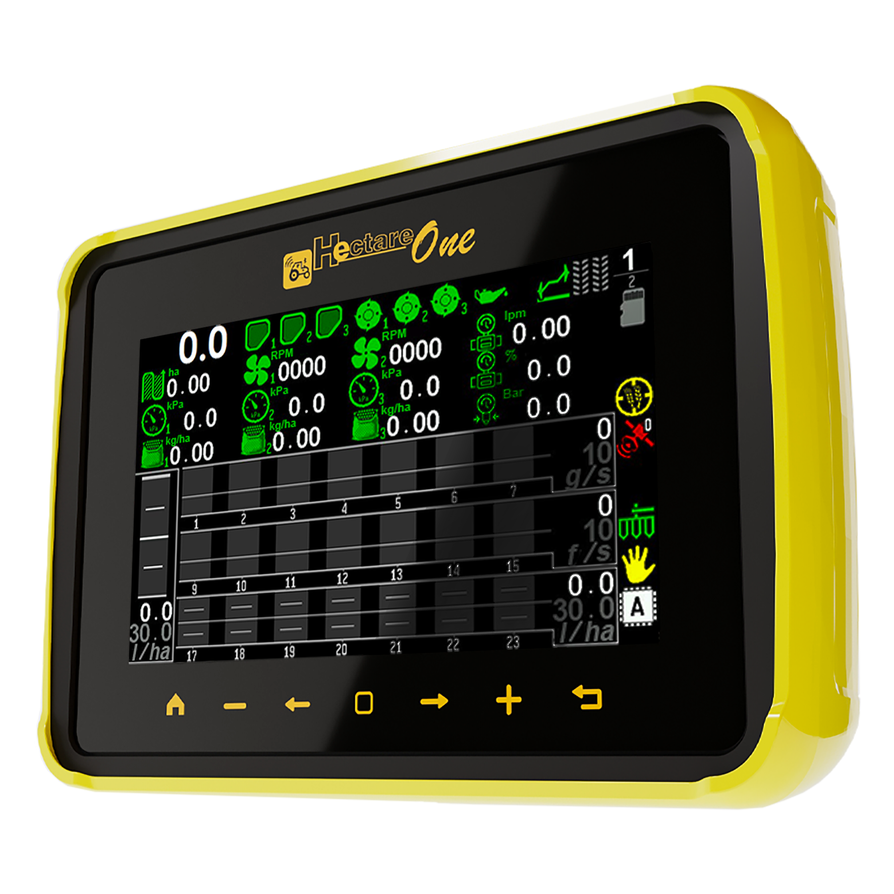
The panel sits in the cab. Everything else is on the implement: one seed sensor per section, and whatever the machine needs besides — see What is supplied.
Seed
- Applies seed to the rate the operator sets, through the dispenser electric motors — on row-crop planters and on grain drills.
- Watches the actual sowing against that rate and reports a section that falls behind.
- Reports a blocked or empty tube by its number.
- Counts seeds, doubles and skips — on row-crop planters.
- Accepts a section shut-off signal from a third-party navigation system.
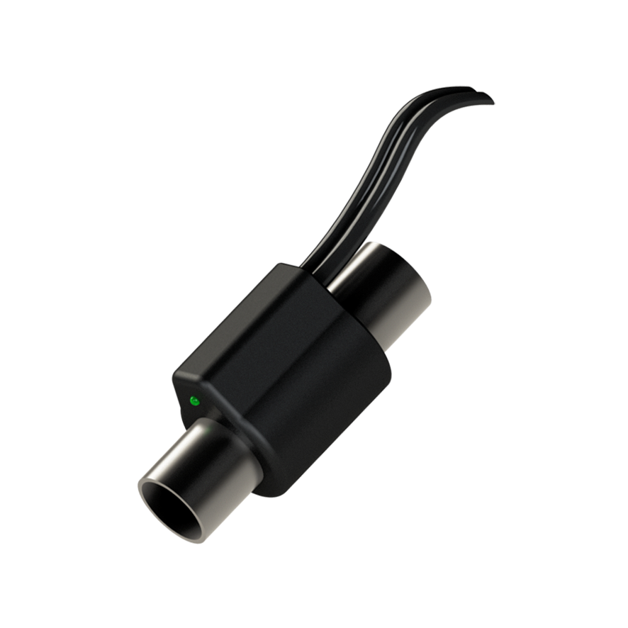
Dry and liquid fertilizer
- Applies liquid fertilizer to the rate through the electric pump.
- Watches dry and liquid lines and reports a section that falls behind or blocks, by number.
The machine around the product
- Hopper level, dispenser shaft rotation, fan speed, air pressure or vacuum, travel speed — each against its own limits.
- The sensors of an autonomous fan-drive engine: oil pressure, battery charge, ignition, fuel level, air filter.
- Working or transport position of the implement.
Tramline
- Creates the tramline with actuators or by stopping dispenser motors.
- Advances the bout by itself from the marker sensors.
- Keeps watching the sections that are shut off, so that a section leaking into the tramline is still reported.
Records
- Treated area, separated into what was sown and what was lost to skips.
- Detailed statistics of the run, and reports written to the memory card.
- Firmware of the devices in the system, updated from the same card.
What is supplied
The minimum system, the optional devices a machine can carry, and the cables that connect them.
The minimum system is the Hectare One panel and the seed sensors — one sensor per section. Agriwelt seed sensors have their own controller and are connected to the panel directly.
Each section of the implement gets its own seed sensor.
Optional devices
Everything else is optional. What a machine carries is written into the panel's profile.
| Device | How many | What it is for |
|---|---|---|
| Pressure sensor | Up to three | Positive pressure or vacuum. |
| HUB8 input device | As needed | Sensors of the “open collector” kind — speed, hopper, fan, dispenser, work position, markers, Wilger flow meters. |
| Dispenser electric motors | With their controller | Applying seed or dry fertilizer to the rate. |
| Tramline actuators | Up to four | Shutting sections off for the tramline. |
| Electric pump controller | One | Liquid fertilizer — UAN, micro-fertilizers and the like. |
The inductive sensor below serves two jobs: it measures the travel speed, and it watches that a dispenser shaft is turning.

The HUB8 takes sensors that have no controller of their own and reports each of them to the panel as if it were a device.

One controller design drives the dispenser motors and the liquid fertilizer pump. That is why a machine cannot have a pump without also having the controller a motor would use.

Cables
The panel takes its power through its own supply cable.
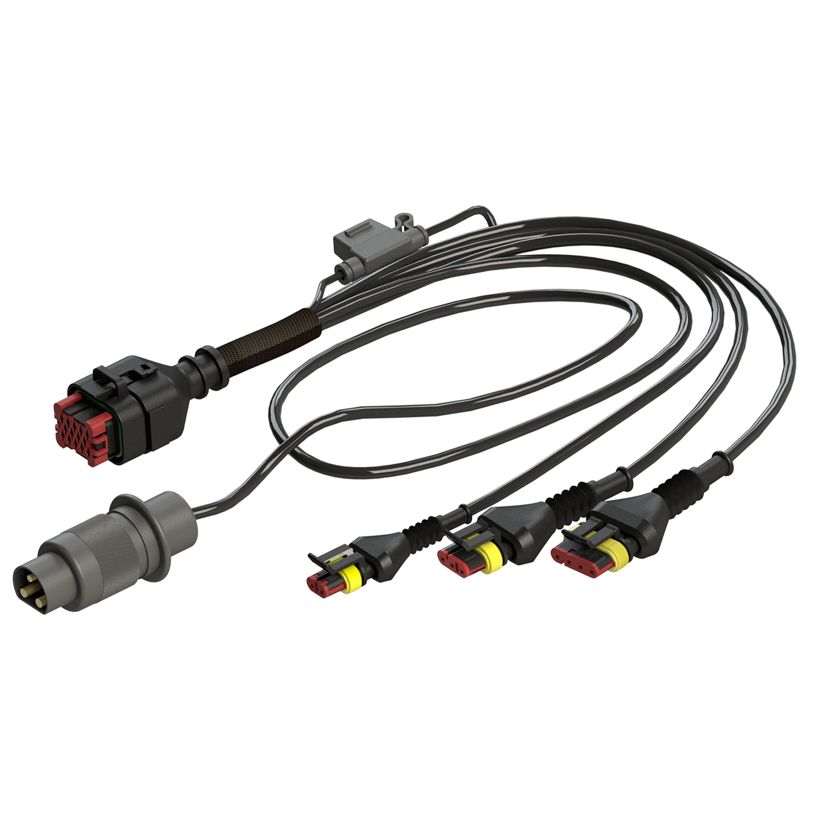
A HUB8 is joined to the system by a 4-pin Amphenol network cable.

The sensors plug into the HUB8 through a harness.
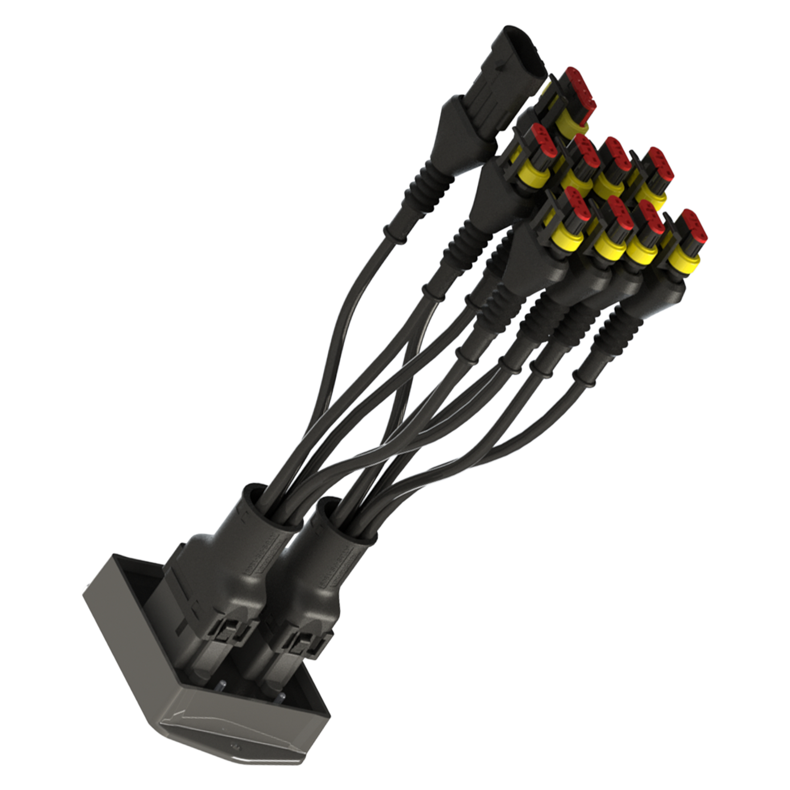
Safety
What the panel can set in motion, who may operate it and from where, and how to handle the panel itself. Read before the first switch-on.
Knowing these rules is the precondition for working with the system safely and without interruption. This manual is part of the delivery: keep it on the machine or in the tractor cab.
The panel drives machinery
The panel is not only an indicator. The dispenser electric motors, the liquid fertilizer pump and the tramline actuators are started by commands from the panel, and several of those commands work while the machine is standing still.
Speed imitation makes the machine meter product without moving. With imitation switched on, the panel calculates as if the machine were driving and drives the dispenser motors and the pump accordingly. Switch imitation off before you leave the cab.
Before you approach the implement, stop the machine, switch the tractor ignition off and take the key with you. Do not rely on what the panel shows: a device whose control has been switched off reports nothing about its state.
The operator's workplace
The system is operated by one person, from the driver's seat of the tractor. Do not operate the panel from outside the cab while the tractor is able to move or while anyone is near the implement.
Intended use
The system is intended solely as a monitoring and control device for sowing and for the application of dry and liquid fertilizer on agricultural machines — mounted and trailed seed drills, planters and cultivators. Following every instruction in this manual is part of intended use. Any other use is not intended use; the manufacturer is not liable for damage arising from it, and the risk is borne by the user alone.
Besides this manual, observe the national safety and environmental rules where the machine is worked, and the safety instructions of the implement and of the tractor.
Handling the panel
- Do not subject the panel to impact or heavy vibration, and do not drop it.
- Do not touch the screen with sharp objects; they damage the touch surface.
- Do not open the housing. It is sealed and carries a pressure equaliser; opening it destroys the seal. Repairs are made by Agriwelt service only.
- Keep the harness connector, the GPS antenna connector and the memory card slot closed and clean when nothing is plugged in.
- Clean with a damp cloth — no solvents, no pressure washer.
- Connect the panel only to a supply that meets the parameters in the device passport. Reversed polarity or a voltage outside the permitted range damages the electronics.
- Disconnect the panel before electric welding on the tractor or the implement.
Warranty and liability
The general terms of sale and delivery of Agriwelt GmbH apply. Claims for warranty and for damage to persons or property are not accepted where the cause is use other than as intended; improper installation, commissioning or operation; disregard of this manual on commissioning, operation and maintenance; or unauthorised modification of the equipment.
Signal words in this manual
| Signal word | What it means |
|---|---|
| DANGER | An immediate threat with a high degree of risk. Ignoring it leads to death or the severest injuries. |
| WARNING | A possible threat with a medium degree of risk. Ignoring it can lead to death or severe injuries. |
| CAUTION | A threat with a low degree of risk. Ignoring it can lead to minor or moderate injuries. |
| IMPORTANT | No threat to people. Ignoring it damages equipment or costs work that has to be done again. |
| NOTE | Information that helps you get more out of the system. |
| TIP | A shortcut or a better way of doing something. |
| SEE ALSO | A pointer to the topic where the subject is described in full. Not a safety instruction. |
The panel and its seven buttons
What is on the front and on the back of the Hectare One, and what each of the seven buttons does.
The Hectare One is operated with seven backlit buttons under the screen and with touches on the screen itself. Everything can be done with the buttons alone — with gloves on, on a rough field.
- Screen. 800 × 480 colour screen with a touch surface. Shown here: the home screen.
- “HOME”. Moves between the working screens. Held down on the home screen, it locks and unlocks product application.
- “MINUS”. Decreases the selected value.
- “UP”. Moves the selection to the previous item of a menu.
- “MENU”. Opens the main menu from the home screen. In a menu it enters the selected item; in a dialogue it confirms.
- “DOWN”. Moves the selection to the next item of a menu.
- “PLUS”. Increases the selected value.
- “BACK”. Leaves a menu or a screen; in a dialogue it cancels. On the home screen it opens the tramline bout menu.
What each button does on each screen is listed in Buttons and gestures.
The back of the panel

There are no controls on the back. One harness connector of up to fourteen contacts carries everything to the panel. The two raised round caps are the GPS antenna connector and the dust-protected slot of the microSD card; the small opening is the pressure equaliser of the sealed housing. The ball joint lets you turn and tilt the panel freely on a flat surface in the cab. For mounting on a tube, an additional bracket is available.
Switching on
What the panel does after power-on, which access level it starts at, and what a long splash screen means.
After the power is switched on, a splash screen with the logo appears. It stays until the panel has found every device connected to it — a few seconds — and then the home screen opens.
What state the panel starts in
- Access level: Operator. The panel starts at the Operator level after every power-on, whatever level was set before. Switching off and on is therefore also the quickest way back to Operator — the only level at which alarm windows are shown. See Access levels.
- The ordinary home screen. Even on a machine without seed sensors the panel starts on the ordinary home screen; the second home screen is opened by hand.
Switching off
The statistics are written every five minutes and when the machine stops. Switch the panel off only after you have stopped moving — otherwise the last stretch of work is lost from the statistics.
Menus, context menus, number pad and windows
The five things everything on the panel is done through — working screens, the main menu, the context menu of a device, the number pad, and the windows that ask or tell.
Everything on the panel happens through five things: the working screens, the main menu, the context menu of a device, the number pad and the windows that ask or tell you something. The working screens have their own topic: Working screens.
The main menu
Press “MENU” on the home screen, or tap the screen with two fingers. The main menu opens over the home screen.

- Selected item. Black text on a light blue band. “UP” and “DOWN” move the band; “MENU” enters the item. Here “Fill the disks with seeds” — see Fill the disks.
- “Settings”. The settings of the system and of the machine. See The Settings menu.
- Arrow head. The item opens another menu.
- “Service”. Commissioning and service items. See Service menu.
- “Information”. Opens the screen with the information about the system.
In any menu, an item is read by what stands on its right:
| What you see on the right | What it means |
|---|---|
| An arrow head | The item opens another menu. Press “MENU”. |
| A value between - and + | Change it with “PLUS” and “MINUS”, right there in the list. |
| A value between -[** and **]+ | “PLUS” or “MINUS” opens the number pad. |
| Nothing | The item performs an action. Press “MENU”. |

“BACK” leaves a menu and returns one level up.
The context menu of a device
Every sensor, motor and indicator on the home screen has its own menu. Touch and hold the device — its icon or its column on the diagram — and its context menu opens. On the Motors screen and on the second home screen the same works for a motor tile.
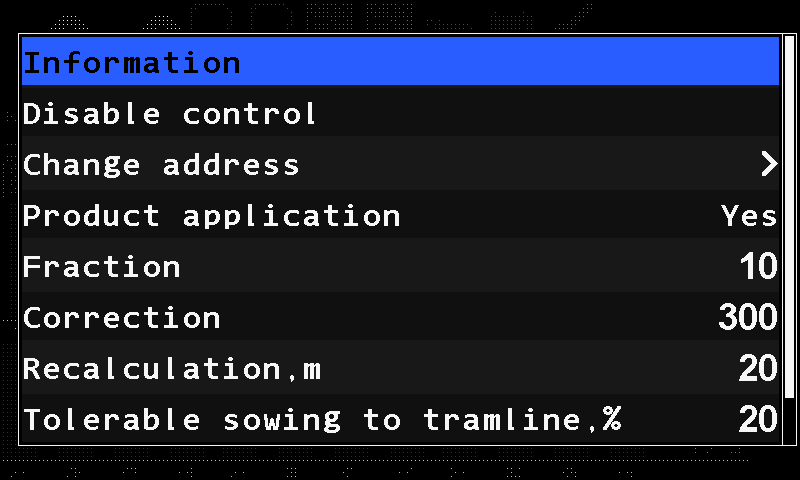
The first item, “Information”, opens the status screen of the device. The second switches its control: “Disable control” or “Enable control” — see Take a sensor into or out of control. Below them stand the parameters; which ones you see depends on the access level (Access levels).
Entering numbers
When a value is written between square brackets, changing it opens the number pad.
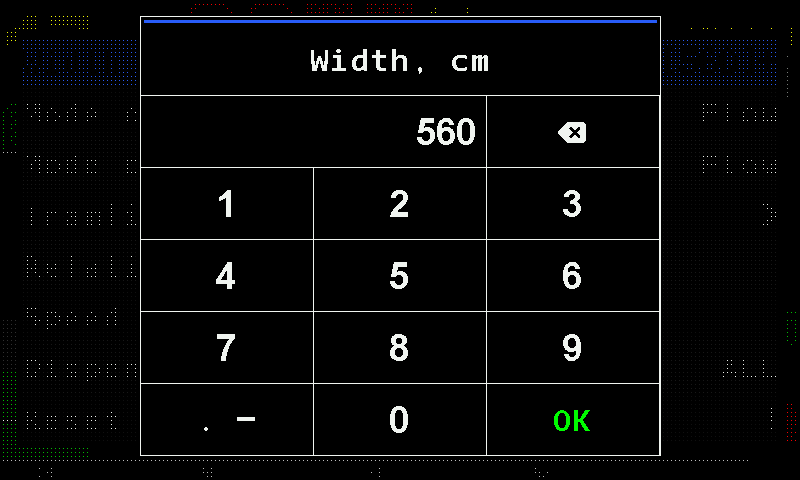
- Name of the parameter. Here “Width, cm”.
- Value. What you have typed so far.
- Backspace. Deletes the last digit. Touch and hold it to clear the whole value.
- Digits. 1 to 9 and 0.
- Decimal point and minus. A touch adds the point; touch and hold switches the minus sign, where a negative value is allowed.
- Zero.
- “OK”. Accepts the value. “MENU” does the same.
A value outside the permitted range is not taken as typed: the panel sets the nearest limit instead.
Windows that ask, and windows that tell
Every window has the same shape: one box in the middle of the screen, a coloured strip along its top with a word in it, the message under the strip, and the buttons — if any — along the bottom. Read the strip first:
| Strip | What kind of window | How it closes |
|---|---|---|
| Yellow, “Confirmation” | The panel asks. Nothing happens until you answer. | Touch “Yes” (green) or “No” (red). “PLUS” answers yes, “MINUS” no, “BACK” cancels. |
| Blue, “Information” | The panel tells you what happened. | Some close by themselves; others close with a touch, “PLUS” or “BACK”. |
| Red, “FAILURE!” | An alarm. | See below. |

The information window below closes by itself.

Alarm windows
An alarm window says what happened, on what kind of device, and which devices — their numbers are listed when several identical sensors report the same fault at once. While it is open, the panel beeps.
| What you do | What happens |
|---|---|
| Touch “Close” in the window, or press “HOME” | This alarm closes. The next one in the queue appears. |
| Hold “HOME” | The window closes and the panel returns to the home screen. |
The other six buttons are dark and do nothing while an alarm window is open.
Quick start — getting ready and moving off
The order of getting the machine ready, what to check before the field, what happens when you move off, and what to watch while working.
Your machine may not have every step — skip what it does not have.
Before the field
Calibrate the speed sensor. Area, rates and deviations are all calculated from the speed; a wrong speed makes every other figure wrong. “Settings” → “Seeding machine parameters” → “Speed calibration”, at Agronomist level. See Calibrate the speed sensor.
Calibrate the metering rollers — on grain drills, and on planters whose fertilizer dispenser is driven by an electric motor. From the context menu of each dispenser or motor, at Operator level, standing still. See Mass calibration of a motor.
Check the tramline rhythm, if the machine makes tramlines. See Set up the tramline rhythm.
Check the sensor parameters — the list is below.
Check each section: is it under control, does it apply product. See Four states of a section.
Choose the field on the Statistics screen. For a new field, erase its statistics first. See Statistics screen.
Set the rates — seeding, dry fertilizer, liquid fertilizer. See Change the target rate.
Check the access level. It must be Operator.
Steps 1 and 2 are not at the same level. “Seeding machine parameters” and the speed calibration under it are Agronomist; the mass calibrations in the context menus are Operator. The usual order: raise the level to Agronomist (Enable the Agronomist level), do step 1, drop back to Operator, do the rest.
Sensor parameters to check
- Speed sensor — “Min speed, km/h”, “Max speed, km/h”.
- Dispenser sensor — “Period, s”, for each sensor.
- Fan sensor — “Minimum, rpm”, “Maximum, rpm”, for each sensor.
- Pressure sensor — “Minimum, Pa”, “Maximum, Pa”, for each sensor.
- Liquid fertilizer pump — “Pulses per liter”, “Max pressure, Bar”.
- Seed and dry fertilizer sensors — “Fraction”, “Correction”, “Recalculation,m” or “Recalculation,sec”; in the “Precise” or “Hybrid” mode also “Rate error,%”.
- Liquid fertilizer sensors — “Rate error,%” and, without a pump in the profile, “Pulses per liter”. Wilger flow meters: red 8900, green 15500, blue 3400 pulses per liter.
- Electric motors, “Precise” mode — “Holes in disk”, for any motor in the group.
- Electric motors, mass dosing — for each motor, “Weight, gr” divided by “Rotations” against the roller specification. The mass calibration fills both in.
Most parameters are set per sensor. In the seed, dry fertilizer and liquid fertilizer sensor groups and in both motor groups, most parameters are common to the whole group — except sensor control and product application, which stay individual. Details: Sensor settings.
Moving off
Put the implement into the working position.
Planters with dispenser motors: fill the disks — main menu, “Fill the disks with seeds”. Without it the first metres of every row are empty. See Fill the disks.
Grain drills: nothing to start. The metering motors begin turning by themselves as soon as the product application control starts — the moment you move off. Move off briskly all the same: the rotor cells have to fill before the first metres are sown at the target rate.
Drive.
When the control starts. The manual lock must be off (Lock application by hand). If a work position sensor is fitted and switched on, the control begins once you move with the implement lowered; without such a sensor, as soon as you move. The alarms start a few seconds later — the delay is “Settings” → “Alarm delay”, 2 to 20 seconds.
| Sound | What it means |
|---|---|
| One short beep | The panel sees the machine seeding. From now on the sections are watched. |
| Three short beeps | The seeding has stopped — at the headland, or the columns have sunk under the control line. |
On grain drills in the “Flow” or “Hybrid” mode, let the panel find the alarm level itself: Set the alarm level automatically.
While working
Watch four things: the speed against the tractor, the fan and the pressure inside their range, the actual rate against the target, and that no sensor is alarming. The Table screen shows how each section is doing right now; the Statistics screen how the whole field has gone.
If the speed sensor fails, see Work without the speed sensor.
About the pictures in this manual
The screens in this manual were shot on a test bench. What on them belongs to the bench and not to your machine.
The screens in this manual are real frames from a Hectare One panel, firmware 1.2.3, shot on a test bench instead of a machine in the field. A few things on them belong to the bench. Your panel shows the same screens without them.
| What you see in a picture | Why it is there | What your panel shows instead |
|---|---|---|
| A blue 0:00 in the top right corner, or the word TRIAL | The bench panel runs on a trial licence. While a trial is active, the clock slot cycles between the time left, the word TRIAL and blank. | The time of day. See Clock. |
| IMITAT in yellow in the clock slot | The bench runs in an imitation mode. | The time of day. |
| A yellow speed figure, or IMITATION in the speed field | The speed is simulated, not measured — there is no wheel turning on a bench. | The measured speed in white. See Speed. |
| Columns that move although the machine stands still | The seed flow is imitated by the sensors on the bench. | Columns that move only while seeding. |
| Red hoppers, a red oil can or battery | The bench has no product and no engine. | Green icons while everything is in order. |
| A red A box at the lower right of the home screen | Actuators named in the bench profile are not physically fitted, so the panel reports them as faulty. | Nothing — the box is not shown while every actuator is in order. See Actuator failure. |
| A red × in place of an icon | A device named in the bench profile is not connected. | The icon of the device. |
| Zeros on the Statistics screen | The bench statistics were empty when the frame was taken. | Your figures. |
Animated pictures are series of frames taken from the panel about seven seconds apart. They show how the screen changes while seeding, not how fast.
The home screen
What every part of the home screen is — speed, indicators, area, rates, the section diagrams — on a drill standing still and on a planter at work.
The home screen is the main working screen. It shows the diagrams of the section control sensors, the state indicators of the devices and the key figures of the work. What it shows follows the profile: every group of sensors and devices entered there gets its tiles, its columns, its rate field.
A grain drill with seed and fertilizer

- Travel speed. In km/h. Messages about the speed replace the figure. Speed
- Hoppers. One icon per hopper sensor, numbered. Red — the level is below the sensor. Hopper
- Metering units. Rotation of the dispenser shafts; the icon turns while the shaft turns. Metering unit
- Engine sensors. Oil pressure, battery charge and ignition of the fan-drive engine. Engine sensors
- Clock. The time of day; the slot also carries messages. Clock
- Memory card. Shown while a microSD card is in the slot. Memory card
- Fan. The fan icon and its speed in rpm. Fan
- Markers. Which marker arm is down. Markers
- Tramline bout. The current bout over the number of bouts in the rhythm. Tramline bout
- Area. Hectares treated on the active field. Area
- Product rate by weight. The rate of product 1, in kg/ha. Product rate by weight
- Seed diagram. One column per seed sensor; the white line is the control line. The section diagram
- Section numbers. The number of each section, under its column.
- Rate field. Measured rate on top, target below, in seeds per second here. Change the target rate
- Implement position. Here a red × — the work position sensor does not answer. Implement position
- Fertilizer diagram. Sections 25 to 36, with their own rate field in fertilizer units per second.
- Actuator failure. At least one motor or tramline actuator is in an alarm state. Actuator failure
A planter at work

- Travel speed. Yellow here, because it is simulated on the bench. Speed
- Hopper. Green — product above the sensor.
- Pressure. Vacuum or positive pressure in kPa. Pressure
- Area. Hectares treated on the active field.
- Population. The actual seeding rate in thousands of seeds per hectare. Population
- Memory card.
- Section column. Green — the row sows within its tolerance. Column colours
- Skips bar. Yellow hatching on the left of a column: the share of skips in that row.
- Doubles bar. Blue hatching on the right of a column: the share of doubles.
- Rate line. The target rate across all rows.
- Tolerance ticks. Upper and lower limit of the permitted deviation, in every column.
- Rate field. Measured seeds per metre on top, target below.
- Implement position. Green — lowered, in work.
- Section numbers.
What each indicator means in all its states is in Indicators; the diagram itself — line, ticks, colours — in The section diagram.
What you can do from the home screen
| To do this | Do this |
|---|---|
| Open the main menu | “MENU”, or tap with two fingers |
| Change the target rate | “PLUS” / “MINUS” — Change the target rate |
| Lock or unlock product application | Hold “HOME” — Lock application by hand |
| Open the tramline bout menu | “BACK” — Next tramline bout |
| Let the panel set the alarm level | Double tap, while applying — Set the alarm level |
| Open the settings of a device | Touch and hold its icon or column |
| Go to the next working screen | “HOME”, or swipe left — Working screens |
| Open the second home screen | Swipe right — Second home screen |
All buttons on all screens: Buttons and gestures.
The section diagram — columns, line and colours
How to read the columns of the home screen in the "Precise" and the "Flow" mode, and what the control line means.
Each column of the diagram is one section — one seed or fertilizer sensor. Its height is the flow through that section. How the rest is drawn depends on the seeding control mode: “Precise” (seeds per metre, with skips and doubles) or “Flow” (seeds per second against an alarm level).
“Precise” mode

- Target rate. Grey, in seeds per metre (s/m). This is the figure “PLUS” and “MINUS” change.
- Measured rate. White — the average of the rows now.
- Tolerance. The permitted deviation from the target, in per cent.
- Rate line. The target, drawn across all rows.
- Upper tick. The upper limit of the tolerance, in each column.
- Lower tick. The lower limit of the tolerance.
- Column. Green — the row sows within the tolerance.
- Skips bar. Yellow hatching on the left edge of a column. The taller it is, the more skips in that row.
- Doubles bar. Blue hatching on the right edge of a column. The taller it is, the more doubles.
- Section number.
“Flow” mode

- Alarm level. Grey, in seeds per second (s/s). The level under which a section counts as losing flow. “PLUS” and “MINUS” change it.
- Measured rate. White — the average of the rows now.
- Control line. The alarm level, drawn across all rows.
- Column above the line. Green — the row works.
- Empty part of a column. Dark grey above the green: the higher the green reaches, the more flow.
- Section numbers. Fertilizer sections continue after the seed sections.
- Fertilizer diagram. The same, for the fertilizer sensors.
- Fertilizer rate field. Measured on top, alarm level below, in fertilizer per second (f/s).
The line: rows under it are not under control
The line is the boundary of a partial blockage, not a decoration. A column above the line is a row that works; a column that sinks under it is a row that is losing flow — long before it blocks completely.

- “NOT UNDER CONTROL”. The rows of this diagram are not watched.
- Columns under the line. Every row delivers less than the level.
- Control line. Dragged above the real flow.
- Alarm level. 18 seeds per second — more than the machine sows.
- Measured rate. 15 seeds per second.
Rows under the line are not under control on purpose: the panel refuses to guard a level that was set above what the machine really delivers. Lower the level until the columns stand above the line, or let the panel set it: Set the alarm level automatically.
Whether the machine is seeding at all, the panel decides by the share of rows that are seeding — a sensor setting, 20 % by default. On the headland the rows drop out of control; on the next pass they come back, with or without a work position sensor. The panel says so with sound: three short beeps when the seeding stops, one short beep when it starts again.
What every colour and symbol of a column means, and the four states of a section: Column colours and section states.
Column colours and the four states of a section
What each colour and symbol of a column on the section diagram means, and the four combinations of control and product application a section can be in.
How the diagram is built — rate line, ticks, control line — is in The section diagram. This page lists what a single column can look like.
Column colours
| What you see | What it means |
|---|---|
| Green column | The row sows normally. |
| Blue column | The row sows more than the target allows (“Precise” and “Hybrid”). |
| Yellow column | The row sows less than the target allows (“Precise” and “Hybrid”). |
| Background blinking dark red, no column | The row sows almost nothing while the machine is seeding — a blocked or empty tube. |
| White column with ! | The control of this section is switched off. Nothing about it is watched. |
| Red × | The sensor does not answer. |
| Red ?, column blinking red | A device of the wrong kind answers in place of this sensor. |
| Yellow ? | The sensor has just received its settings, or it counts seeds but the panel has no speed to judge them by. |
| Grey hatching over the whole column | The section is shut off for the tramline, or its product application is switched off. |
| Green hatching at the bottom of a grey column | A small flow in a shut-off section, still within what is tolerated. |
| Red hatching in a grey column | The shut-off section sows into the tramline. |
The four states of a section
Each section has two independent switches: whether the panel watches it (control), and whether the machine applies through it (product application).
| Control | Application | What it means | What the column shows |
|---|---|---|---|
| on | on | Normal work. | The normal column. |
| on | off | Tramline: the row deliberately does not sow, and the panel knows it. | Grey hatching. |
| off | on | The row sows, but nobody is checking it. | White with ! |
| off | off | The section is out of the work altogether. | White with ! |
Control is switched in the context menu of the sensor: Take a sensor into or out of control. “Product application” is an item of the same menu, at the Agronomist level; in tramline mode the actuators or motors switch the sections themselves and this item is ignored.
The home screen on different machines
The same panel on a planter, a drill and machines of 44 and 96 rows — standing still and at work — so you can recognise your own screen.
What the home screen shows follows the profile. The pictures below were taken on one panel, firmware 1.2.3, set up as different machines. Bench artefacts — the blue clock, the yellow speed — are explained in About the pictures.
An eight-row planter, standing still
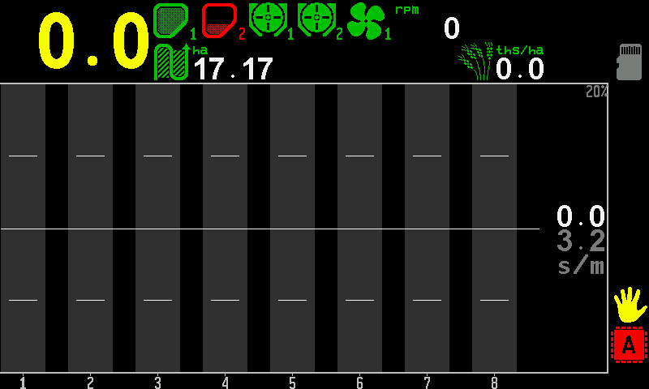
- Travel speed. Yellow: the speed is simulated, not measured.
- Hoppers. The first green, the second red — that hopper reports empty.
- Metering units. Two dispenser shaft sensors.
- Fan. With its speed in rpm beside it.
- Area. Hectares treated on the active field.
- Population. The actual seeding rate in thousands per hectare.
- Memory card. A microSD card is in the slot.
- Tolerance. The permitted deviation in force, written above the diagram.
- Tolerance ticks. Upper and lower limit, in every column.
- Rate line. The target rate.
- Section column. Empty: the machine stands still.
- Rate field. Measured seeds per metre on top, target below.
- Manual lock. The yellow hand: product application is locked by hand. Lock application by hand
- Actuator failure. A fault of the dispenser electric motors. Motors screen
- Section numbers.
Three machines, standing still
The target rates are set, the actual rates are zero. Forty-four seed sensors in two rows of twenty-two, two hoppers, two dosing shafts, a fan, one rate field in seeds per second; the planter icon at the right is green — the machine is in working position.

Twenty-four seed sensors and twelve fertilizer sensors: two diagrams, two rate fields. Along the top two hoppers, two dosing shafts, oil pressure, battery, ignition and a fan.

Eight seed sensors in the “Precise” mode with a pressure sensor: one row of columns with the tolerance band, the rate in seeds per metre and the count per hectare.

At work
The eight-row planter seeding. Each column is one row; the tops move with every count, the hatching shows skips and doubles. Read it with The section diagram.
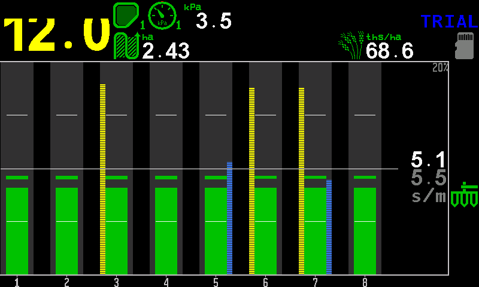
The 24-row drill at 12 km/h. The series starts with the columns below the line and “NOT UNDER CONTROL” over both diagrams; then the target is lowered, the columns rise above the line and the rows are under control again.

The 44-row machine at 12 km/h: two diagrams of twenty-two columns, hoppers full, dosing shafts turning.

The largest machine: 48 seed and 48 fertilizer rows, three hoppers, three dosing shafts, two fans. It, too, starts under the line and comes back under control when the target comes down to the real rate.

A real machine at work
Shot on a machine with 48 seed sensors in two rows, two hoppers, two dispenser shaft sensors and one fan, while sowing. The rate field is selected for editing: its background is lit, the target is white and the measured value grey. Unselected, it is the other way round.

Indicators of the home screen
Every indicator of the home screen with all its states — what you see, what it means, what to do.
Where each indicator sits is shown in The home screen. This page says what each one means, state by state.
How to read any indicator


Almost every indicator follows the same rule. Learn it once and you can read an indicator you have never seen.
| What you see | What it means |
|---|---|
| Normal. The device answers and its value is inside the limits. | |
| Alarm. The device answers, but the value has left the limits. An alarm window follows after the alarm delay. | |
| No answer from the device. The value is shown as XXXX. | |
| Icon alternating with a white [!] | The device is in the profile, but its control is switched off. The value is shown as !!!!. |
| Icon alternating with a red ? | A device of the wrong kind answers in its place. The value is shown as ????. |
| Yellow icon | Not a fault. A state you have chosen or that needs your attention: implement raised, markers up, ignition off, application locked by hand. |
Speed

The travel speed in km/h. Messages about the speed replace the figure and blink about once a second, so that the figure stays readable.
| What you see | What it means |
|---|---|
| A number in white, e.g. 10.0 | Normal. |
| “SLOWER” on red | You drive faster than the maximum set for the speed sensor. Slow down. |
| “FASTER” on red | You drive slower than the minimum. Speed up. |
| XX.X in red | No answer from the input device that carries the speed sensor. |
| ???? in red | A device of the wrong kind answers in place of the speed sensor. |
| A yellow number alternating with “IMITATION” | The speed is simulated from the setting of the speed sensor, not measured. Nothing that depends on the speed is real. See Work without the speed sensor. |
| INCREASE IMITATION / DECREASE IMITATION | The simulated speed itself is outside the permitted range. Change the setting, not the travel speed. |
| Sensor1 / Sensor2 | One of two speed sensors has failed. |
| “Settings” | The minimum and the maximum speed contradict each other. |
“SLOWER” and “FASTER” are not alarm windows. They stay in the speed field for as long as the speed is wrong, because you have to see them while correcting it. See Speed sensor alarms.
Clock
The clock slot at the top right is shared by several messages.
| What you see | What it means |
|---|---|
| The time in white | Normal. |
| BAT in red, for about a second in every four | The clock battery is low. The clock still runs; between the flashes the time is shown in red. Have the battery replaced. |
| XX:XX in red, blinking | The clock chip does not answer. The panel has no date and time; everything it records carries the wrong one. |
| IMITAT in yellow | The imitation mode of the service menu is on. |
| Blue hours:minutes, then TRIAL, then blank | A trial period is running; the blue figure is the time left. When the first row has no room for the clock, this loop appears only now and then. |
Memory card

Shows that a microSD card is in the slot. Two states only: the icon is there, or it is not.
Hopper


A full green hopper is normal. An empty red one means the level has fallen below the sensor: refill. See Hopper alarms.
Metering unit


The rotation of the dispenser shaft. While the shaft turns, the icon turns — the fastest way to see that the metering unit really runs. Red means no rotation, or not the speed required. See Rotation alarms.
Fan

The fan speed in revolutions per minute. Green is normal; red — above the maximum or below the minimum. The × and the [!] have the usual meaning.
Pressure

The vacuum or the positive air pressure in the distribution system, in kPa. Green is normal; red — above or below the permitted range. See Pressure alarms.
Engine sensors


The sensors of the engine that drives the fan.
| Indicator | Green | Red or yellow |
|---|---|---|
| Oil pressure | Normal | Red: the oil pressure has fallen below the permitted level. |
| Battery charge | Normal | Red: the battery is not being charged. |
| Ignition | Green key: ignition on, the engine sensors are watched | Yellow key: ignition off. Not a fault — but the engine is not watched either. |
| Fuel level | Normal | Red: little fuel left in the tank. |
| Air filter | Normal | Red: the air filter is clogged; clean or replace it. |
Area

The area treated on the active field, in hectares.
Population

In the “Precise” mode: the actual seeding rate in thousands of seeds per hectare (ths/ha).
Product rate by weight


Shown when the dispensers apply products by weight; one indicator per product, with its number. It shows the rate in kg per hectare.
| What you see | What it means |
|---|---|
| Icon green | Normal. The machine applies what was asked of it. |
| Icon red, blinking | The actual rate is outside the permitted deviation from the target. |
| Field lit, figure blinking | The target is being set. Touch and hold the field to type the target on the number pad, or use “PLUS” / “MINUS”. |
| Field lit, not blinking | Setting is on, but another rate field is the one being changed. This one shows its target and waits. |
Dosing by weight is not possible
A red blinking product icon at the right edge. The panel has worked out that the target cannot be held at any travel speed: the lowest speed at which the metering rollers can deliver the rate is already at or above the highest.
What to do. Check the target rates first — one product asking too much closes the window for all of them. Then check the metering rollers: a roller of another size may be needed. The speed limits the panel calculated are on the “Information” screen of the speed sensor. See Dosing by weight alarms.
Markers

| What you see | What it means |
|---|---|
| Green, both arms down | Both markers are lowered. |
| Green, one arm down | Only that marker is lowered — left or right, as drawn. |
| Yellow, both arms up | Both markers are raised. Not a fault; on a machine that changes the tramline bout by the markers, the bout changes now. |
Implement position

Green — lowered, in work. Yellow — raised, in transport, not applying.
Tramline bout

Shown only if the tramline is switched on. The large number is the current bout, the small one under it the number of bouts in the rhythm.
| What you see | What it means |
|---|---|
| Bout figures, e.g. 1 over 3 | How far you are from the next tramline. |
| Tramline icon grey | The bout changes by itself. |
| Tramline icon yellow | The bout does not change by itself: automatic change is switched off, or the sensor it depends on is missing, silent or not under control. Change it by hand. |
See Move to the next tramline bout.
Manual lock

A yellow hand, blinking, at the right edge: product application is locked by hand. The machine applies nothing, however it moves. Not shown at all while application is allowed. It appears on machines with electric dispenser motors or a liquid fertilizer pump. See Lock application by hand.
Actuator failure


One icon for all electric motors and tramline actuators together. Not shown at all while everything is in order.
| What you see | What it means |
|---|---|
| Red, blinking | At least one motor or actuator is in an alarm state. |
| Alternating with white [!] | The control of at least one actuator is switched off. No fault is known — but that actuator is not watched. |
Which one and why is on the Motors screen.
Liquid fertilizer pump
Depending on the equipment, the pump has two or three indicators.
| Indicator | What it shows |
|---|---|
| The main indicator. Its context menu holds the pump parameters. | |
| How hard the pump works. It disappears first when the screen has no room for it. | |
| Only if the pressure sensor is fitted and switched on in the pump controller settings. |
Rate. Besides green, red, × and [!]: a yellow pump with STOP — application is locked by hand or the implement is raised, and the pump will not start when the machine moves; a lit target figure — there are no section flow sensors in the profile, so the figure is the target, not a measurement.
Load. At 99 % and above it turns yellow: the pump is at its limit and cannot follow more speed. Drive slower, or the rate falls below the target. ---- blinking red: the controller reports no load figure.
Pressure. Red means the liquid pressure is too high — reduce the speed, or raise “Max pressure, Bar” in the pump controller settings if the line can really take it. ---- blinking red: the pressure sensor is broken or gives no reading. See Pump controller alarms.
The second home screen
The home screen for a machine without seed sensors — what is on it, how to open and close it, and what its chevrons and tiles do.
This screen was made for a system without seed sensors: a machine where the seeding rate is held by the dispenser electric motors and the panel monitors the main working units. On such a machine the ordinary home screen would be almost empty.
Open it from the home screen with a swipe to the right. Close it with “HOME” or a swipe to the left. It is not part of the circle of working screens, and the panel does not switch to it by itself — even on a machine without seed sensors it starts on the ordinary home screen.

- Fan. The fan and its speed in rpm.
- Seed spacing. In seeds per metre.
- Travel speed. In km/h; yellow while it is simulated. Speed
- Area. Hectares treated on the active field.
- Settings symbol. A touch opens the main menu, the same as “MENU”.
- Red chevrons. A touch takes the outermost motor on that side out of control.
- Green chevrons. A touch takes the next motor towards that side back into control.
- Target rate. In thousands of seeds per hectare. Touch and hold it, then swipe up or down to change it.
- Motor 1. Its number and value; the icon alternates with the state sign — here STOP, the motor is not running.
- Motor 2. A red × and XXX — no connection; the motor is not driven.
- Manual lock. The yellow hand: application is locked by hand. Touch and hold it, or hold “HOME”, to lock or unlock.
Each motor icon alternates, about once a second, between the picture of the motor and the sign of its state. In the other blink phase the same screen looks like this — the motors are drawn as motor symbols, and the word “IMITATION” has replaced the speed figure because the speed is simulated:

What you can do here
| To do this | Do this |
|---|---|
| Open the main menu | “MENU”, or touch the settings symbol |
| Change the seeding rate | Touch and hold the rate, then swipe up or down. It stays within the permitted limits. |
| Take motors out of or into control | Touch the red or green chevrons at either end of the rate strip. Confirm with “Yes” if the panel asks. |
| Open the settings of a motor | Touch and hold the motor |
| Lock or unlock product application | Hold “HOME”, or touch and hold the hand. A short beep confirms. |
| Return to the home screen | “HOME”, or swipe left |
What the motor states mean: Motors screen.
The working screens and how to move between them
The four working screens in their circle, the second home screen beside it, and every way — button or swipe — to get from one to another.
The panel has four working screens in a circle, and a fifth that stands apart.
| Screen | What it is for |
|---|---|
| Home screen | The diagrams of the sections, the indicators of the devices, the speed, the area and the rates. The panel starts here. |
| Table | The readings of every section in figures, as a list. Several tables, depending on the control mode. |
| Statistics | The results of the work by field: area, path, quantities, quality. |
| Motors | The dispenser electric motors, and the tramline actuators if the machine has them. Present only if the profile holds at least one motor or tramline actuator. |
| Second home screen | A home screen for machines without seed sensors. Outside the circle. |
The Motors screen was called the “Actuators” screen in earlier documentation. On most machines it shows the dispenser electric motors, so this manual calls it Motors.
The circle
“HOME” moves to the next screen, always in the same direction, and returns to the home screen from the last one:
Home screen → Table → Statistics → Motors → Home screen.
Without motors and tramline actuators in the profile, there is no Motors screen and Statistics returns straight to the home screen.
Every way from one screen to another
A swipe has to be a long one, with one finger, across the screen — a short movement is not taken as a transition.
| From | Action | To |
|---|---|---|
| Home screen | “HOME”, or swipe left | Table |
| Home screen | Swipe right | Second home screen |
| Table | “HOME”, or swipe left | Statistics |
| Table | “BACK”, or swipe right | Home screen |
| Statistics | “HOME”, or swipe left | Motors (home screen, if the machine has none) |
| Statistics | Swipe right | Table |
| Statistics | “BACK” | Home screen |
| Motors | “HOME”, “BACK”, or swipe left | Home screen |
| Motors | Swipe right | Statistics |
| Second home screen | “HOME”, or swipe left | Home screen |
Buttons or gestures
Almost everything on the working screens can be done with a button or with a gesture.
| Screen | What it does | Button | Gesture |
|---|---|---|---|
| Home screen | Opens the main menu | “MENU” | Tap with two fingers |
| Home screen | Sets the alarm level from the real rate | — | Double tap with one finger, while applying |
| Home screen | Opens the second home screen | — | Swipe right |
| Table | Scrolls the rows | “UP” / “DOWN” | Swipe up or down |
| Table | Previous or next table | “MINUS” / “PLUS” | Long swipe left or right with two fingers |
| Table | Asks whether to zero the readings | “MENU” | Tap with two fingers |
| Statistics | Scrolls the report | “UP” / “DOWN” | Swipe up or down |
| Statistics | Shows another field | “MINUS” / “PLUS” | Swipe left or right with two fingers |
| Statistics | Opens the menu of the screen | “MENU” | Tap with two fingers |
Two actions on the working screens have no button: the swipe right that opens the second home screen, and the double tap that sets the alarm level. Everything else can be reached from the buttons. The full list per screen: Buttons and gestures.
The Table screen
The readings of every section in figures — which tables your machine has, what each column means, and how to read the colours.
The Table screen shows the readings of every section as figures, one line per section. It answers the question the diagram cannot: which section exactly, and by how much. Open it from the home screen with “HOME”; leave it with “BACK”.
A planter in the “Precise” mode

- #. The number of the section.
- sds/m. Seeds per metre, measured now.
- Q.%. Quality — the share of seeds placed singly, as intended.
- Db%. Doubles — two seeds where one was intended.
- Sk%. Skips — a gap where a seed was intended.
- ks/Ha. The applied rate in thousands of seeds per hectare (in the second table: seeds per metre).
- %. The deviation of this section from the rate that was set.
- Table number. This table and how many there are, between (−) and (+) — “MINUS” and “PLUS” switch tables.
- Section number on yellow. Something in this line has drifted towards its limit.
- Value on yellow. The figure that drifted — here the skips of section 7.
- Totals. The same columns for the whole machine.
A value on yellow is drifting towards its limit; on red it is beyond it. A whole line in grey with ! is a section taken out of control; a line in red with × is a sensor that does not answer, with ? a device of the wrong kind.
A drill in the “Flow” mode

- #. The number of the section.
- sds/s. Seeds per second. Dashes while nothing is counted.
- Deviation scale. From −50 % through 0 to +50 %.
- Deviation bar. How far this section stands from the rate that was set.
- %. The same deviation as a figure.
- Table number. Table 1 of 2 — the second holds the fertilizer sections.
- Lowest deviation. The section furthest below the rate.
- Highest deviation. The section furthest above the rate.
- Recalculation interval. The stretch over which the figures are gathered — “Recalculation,m” of the sensors.
Which tables your machine has
| Table | Shown when |
|---|---|
| Seed counters — seeds per second or per metre, with the deviation bars | Always. |
| Rate per area (thousands per hectare) and rate per distance (seeds per metre) | Only in the “Precise” seeding control mode. |
| Dry fertilizer | The machine has fertilizer sensors and the fertilizer control mode is not “Precise”. |
| Liquid fertilizer | The machine has liquid fertilizer sensors. |
In the “Precise” mode the planter above has three tables: rate per area (1/3), rate per distance (2/3), and the seed counters (3/3) — the count of seeds each section has sown, beside the deviation bars, with the total for the machine in thousands at the bottom.

Working with the screen
| What you want | Button | Or gesture |
|---|---|---|
| Next or previous table | “PLUS” / “MINUS” | Long swipe left or right with two fingers |
| Scroll the lines | “UP” / “DOWN” | Swipe up or down |
| Zero the readings | “MENU” | Tap with two fingers |
| Go to Statistics | “HOME” | Swipe left |
| Back to the home screen | “BACK” | Swipe right |
Zeroing: Zero the readings.
The table while seeding
The lines change with every count; a line that drifts turns yellow.

On large machines the rows do not fit on one page: “UP” and “DOWN” scroll them.

The Statistics screen
The report of the work on each field, block by block and line by line — and the menu that chooses the field, saves the report and erases it.
The Statistics screen is the report of the work: how far you drove, how much you covered, how much you sowed, and how evenly. It is kept separately for each field and survives switching off. Open it with “HOME” from the Table screen (twice from the home screen); leave it with “BACK”.
The report is one long list. Scroll it with “UP” and “DOWN”, or swipe up and down.
The head and the work on the field
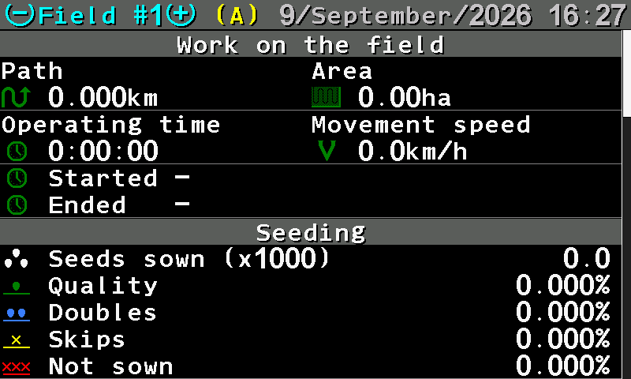
- Field number. The field whose report you see. “MINUS” and “PLUS” — or a two-finger swipe — show another field.
- (A). This is the active field — the one the panel writes to now.
- Date and time. Today's date and the time of day.
- Path. Distance driven, in km.
- Area. Area covered, in ha.
- Operating time. Hours, minutes and seconds of work.
- Movement speed. The average travel speed.
- Started / Ended. When the work on this field began and ended.
- Seeding. The next block — see below.
The seeding block

- Seeds sown (x1000). The total, in thousands of seeds.
- Quality. The share of seeds placed singly, as intended. Judge the work by this number.
- Doubles. Two seeds where one was intended.
- Skips. A gap where a seed was intended.
- Not sown. The share of the run when nothing came out at all.
- Actual / Target. What was applied against what was set.
- Population, ths/ha. In thousands per hectare; the deviation in brackets.
- Rate, s/m. In seeds per metre; the target on the right.
- Sown / Not sown / Unknown. The field split three ways, in hectares.
- Bar. The same split as a coloured bar: green sown, red not sown, grey unknown.
- Seed sensors. The next block — section by section.
Unknown is the area driven while the panel could not judge — not a fault, but not proof of work either.
Section by section

- Seed sensors. One block per section follows.
- Seed sensor 1. The section number, and the seeds it counted.
- q d s n. Quality, doubles, skips and not sown for this section.
- Sown / not sown / unknown. The share of each for this section (s, n, ?) and the bar.
- Population. Thousands per hectare for this section, with its deviation.
- Spacing. Seeds per metre for this section, with its deviation.
This is where an uneven drill shows itself. A section with a lower quality than the rest, or a longer red part of its bar, points at that row: a blocked outlet, a worn disk, a sensor that needs cleaning.
Blocks that appear on other machines
| Block | What it holds |
|---|---|
| Work without alarms control | The part of the work the panel was not watching — driven with the control switched off or locked. |
| Speed control | How far and how long you drove outside the permitted speed range. |
| Fertilizing, Liquid fertilizer | Fertilized / not fertilized / unknown, if the machine applies them. |
| Product | For a product applied by weight: the quantity applied, and the actual against the target rate in kg/ha. |
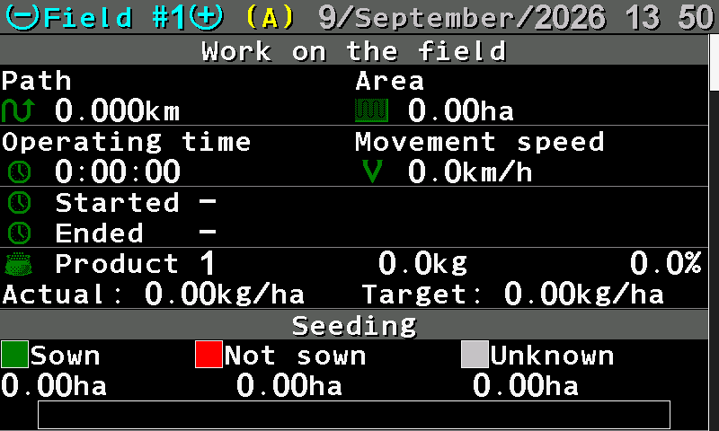
The menu of the screen
Press “MENU”, or tap with two fingers.

| Item | What it does |
|---|---|
| “Select field” | Makes the field shown the active one — the panel writes to it from now on. Shown only while you look at a field that is not active. A field whose statistics are not empty cannot be selected until its data is erased; the panel says so and asks. |
| “Statistics” | Switches the report between short and full. The short report keeps the totals and drops the per-section detail. |
| “Mileage” | Path in km and area in ha over the whole life of the system. These totals cannot be reset. Without a speed sensor, the accumulated running time instead. |
| “Save to SD-card” | Writes one field, or all of them, to the memory card. Shown while a card is in the slot. |
| “Zero statistics” | Erases the statistics. |
The Motors screen
The dispenser electric motors and the tramline actuators of the machine, one tile each — how to read a tile and how to reach a motor's settings.
The Motors screen shows the dispenser electric motors of the machine, one tile each, and the tramline actuators if the machine has any. Look here when a row stops sowing and you want to know whether the motor is the reason.
It exists on any machine whose profile holds at least one electric motor or one tramline actuator. Reach it with “HOME” from the Statistics screen; leave it with “HOME” or “BACK”.

- Motor 1, STOP. Yellow — the motor is serviceable, but product application is not running.
- Value of motor 1. The driven shaft speed in rpm, or seeds per metre in the “Precise” mode.
- Motor 2, red ×. No connection to this motor.
- XXX. No value, because the motor does not answer.
Reading a tile
The colour of the symbol is the state. The value beside it is the driven shaft speed in rpm — or, in the “Precise” control mode, the seeds per metre measured by the seed sensor of that row.
| Symbol | Value | State |
|---|---|---|
| Motor, green | the figure | Normal. The motor is under control and driven. |
| STOP, yellow | the figure | The motor is serviceable, but product application is switched off. Nothing is wrong with it — the system is simply not applying. |
| Motor, red | the figure | The motor is in an alarm state. Read the alarm for the reason: Motor controller alarms. |
| ×, red | XXX | No connection. Check the cable and the connector first. |
| ?, red | ??? | The panel cannot tell what this device is: another kind of device answers in its place, or the controller has stayed in its firmware update mode. |
| !, outlined | !!! | The motor is taken out of control by the operator. It is neither driven nor watched. |
Tramline actuators
| Actuator symbol | State |
|---|---|
| Pulled in or pulled out, green | The actuator has reached its position. |
| Pulled in or pulled out, yellow | The actuator is moving to that position. |
| Alternating between in and out, yellow | The panel cannot tell the actuator's position. |
| Blinking red | The actuator is in an alarm state: Tramline alarms. |
| Blinking red × or ? | No connection, or a device of the wrong kind. |
| Blinking white | The actuator is taken out of control. |
Working with the screen
| What you want | Button | Or gesture |
|---|---|---|
| The settings of one motor | — | Touch and hold its tile |
| Back to the Statistics screen | — | Swipe right |
| Back to the home screen | “HOME” or “BACK” | Swipe left |
The long press opens the context menu of the motor you pressed. The same menu is reached from the home screen, but here you see every motor of the machine at once and can choose the one that misbehaves. See Dispenser motor settings.
Change the target rate
Raise or lower the rate the panel holds and guards, from the home screen, while seeding — with the buttons or by touch.
The rate field at the right of each diagram shows two numbers: the measured rate on top, the target below it. In the “Flow” mode the target is the alarm level of the diagram — see The section diagram.
With the buttons
On the home screen, press “PLUS” or “MINUS” once. A rate field is selected and starts to blink; nothing has changed yet.
The rate field at the right selected for editing: lit background, target in white. Press “PLUS” to raise the target or “MINUS” to lower it, one step per press.
If the machine has more than one rate field — seed and fertilizer, or products by weight — press “DOWN” or “UP” to move to the next or the previous one.
Press “BACK” to finish. The field stops blinking and the new target is in force.
By touch
Touch and hold the rate field of a diagram. It lights up.
Swipe up over the screen to raise the target, down to lower it — one step per swipe.
Touch the screen outside the diagrams to finish.
For a product applied by weight, touching and holding its kg/ha indicator opens the number pad instead: type the target and touch “OK” (Entering numbers). On the second home screen, touch and hold the rate, then swipe.
Lock product application by hand
Stop all product application with one long press, and start it again — what the lock does and how to see that it is on.
The manual lock stops all product application: the dispenser motors and the pump do not run, however the machine moves. Use it to cross a field already sown, to drive on the road with the implement lowered, or when you work without the speed sensor.
On the home screen, hold “HOME” until the panel beeps once.
Check the right edge of the screen. A yellow hand blinks there: application is locked.

To unlock, hold “HOME” again. One short beep; the hand disappears.
On the second home screen the same works with “HOME”, or by touching and holding the hand.
What the lock changes elsewhere
- The motor tiles on the Motors screen show a yellow STOP — serviceable, not applying.
- The pump rate indicator shows a yellow pump with STOP (Liquid fertilizer pump).
- The product application control does not start when you move off — the lock must be off for the control to start (Quick start).
- The work done while locked is counted in the statistics as Work without alarms control (Statistics).
The yellow hand is shown on machines with electric dispenser motors or a liquid fertilizer pump.
Set the alarm level automatically
Let the panel set the alarm level of the diagrams from the rate the machine really sows, instead of guessing it — grain drills in the "Flow" or "Hybrid" mode.
On a grain drill the seeds arrive too close together to be counted one by one, so the panel guards each row against an alarm level: the line on the diagram. Set it too high and every row sinks under the line — “NOT UNDER CONTROL”. Set it too low and a half-blocked row goes unnoticed. The panel can set it for you from what the machine really sows.
This works in the “Flow” and “Hybrid” modes, for the seed and the dry fertilizer diagrams, and for liquid fertilizer in the “Flow” mode.
Start seeding at your normal speed, with product flowing through every row.
Double tap the home screen with one finger.
The panel beeps once and lights the rate field: the new alarm level is set from the rate being sown now.
The diagrams with the columns above the line. Check that every column stands above its line.
The double tap works only while product is being applied. Standing still, nothing happens.
What the line means and why rows under it are not watched: The section diagram.
Take a sensor into or out of control
Stop the panel from watching one sensor — a section that is shut off, a broken sensor — and take it back later.
A sensor out of control is not watched: the panel raises no alarm about it, whatever it reports. Take a sensor out of control when its section is out of work on purpose or when the sensor is broken and you must finish the field. Take it back as soon as you can.
Take a sensor out of control
On the home screen, touch and hold the sensor — its column on the diagram, or its icon. Its context menu opens.
The context menu of a seed sensor. Select “Disable control” with “UP” / “DOWN” and press “MENU”, or touch the item.
The panel asks “Are you sure that you want disable control?”. Touch “Yes”, or press “PLUS”.
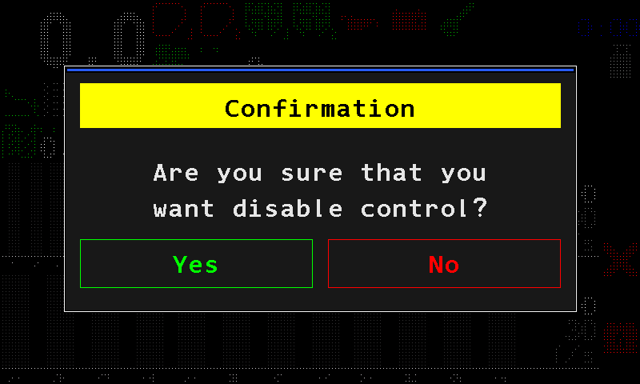
The confirmation before control is switched off. The column turns white with ! (an icon alternates with a white [!]). The sensor is no longer watched.
Take it back into control
Do the same and choose “Enable control”. The panel asks “Are you sure that you want enable control?”; confirm with “Yes”. A seed sensor taken back into control shows a yellow ? for a few seconds while it receives its settings.
When the statistics must be erased
For some sensors the panel first asks to erase the statistics of the active field: it says “Data for the selected field must be erased!” and asks again. “Yes” erases the statistics of the active field — at the Operator level only after the Agronomist PIN — and changes the control; “No” leaves both as they are.
The speed sensor cannot be taken out of control. Motors are taken out of control the same way, from their tile on the Motors screen or with the chevrons on the second home screen. What the four combinations of control and product application mean: The four states of a section.
Zero the readings of the Table screen
Set the seed and fertilizer counters of the Table screen to zero — for a new field or a new seed lot — without touching the field statistics.
The Table screen keeps counting from the moment its readings were last zeroed. Zero them when you start a new field or a new seed lot, so that the counters and deviations describe only the new work.
Open the Table screen: “HOME” on the home screen.
Press “MENU”, or tap the screen with two fingers. The panel asks “Zero readings?”.
The question before zeroing: Yes in green, No in red. Touch “Yes”, or press “PLUS”. The counters of every seed, dry fertilizer and liquid fertilizer sensor are set to zero.
“No”, “MINUS” or “BACK” leaves everything as it was.
Only the counters of the Table screen are zeroed. The field statistics are not touched; they are erased with “Zero statistics” in the menu of the Statistics screen.
Fill the disks with seeds
Turn the seed disks of a planter with dispenser motors until every disk holds seed, so that sowing starts from the first metre — how to run it and read the result.
This applies only to planters with seed dispenser electric motors in the “Precise” control mode. Without motors in the profile, or in another mode, the menu item is not shown.
When the disks are driven by electric motors, they stand empty until the motors run. Drive off with empty disks and the first metres of every row get nothing: each disk has to pick up seeds and carry them round to the drop point first. Filling turns the disks while the machine stands still, so that sowing starts from the first metre.
Stop the machine. The item is shown only while the machine stands still.
On the home screen, press “MENU”. Select “Fill the disks with seeds” and press “MENU”.
The main menu with Fill the disks with seeds selected. The panel asks “Are you sure?”. Touch “Yes”, or press “PLUS”. “No”, “MINUS” or “BACK” cancels.

The confirmation before the disks turn. Watch the tiles. Each motor turns its disk until the seed sensor of its row registers the first seed. At the end the panel beeps three times and shows “Operation complete.”
Touch “Close”, or press “BACK”, to return to the home screen.
To stop before the end, touch “Cancel” or press “BACK”: the motors stop at once and their control goes back to the seeding logic.
Reading the screen
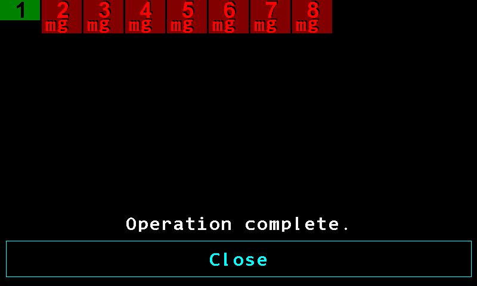
- Green tile. Done: the seed sensor registered a seed, the disk is filled.
- Dark red tile. Failed: the disk could not be filled. The motor number is bright red.
- Reason letters. Why the tile failed — see the table below. Here m g.
- “Operation complete.” Every motor has finished.
- “Close”. Returns to the home screen. While the operation runs, this button reads “Cancel”.
| Tile | State |
|---|---|
| Dark grey | Waiting its turn. Up to eight motors run at the same time; the rest wait. |
| Yellow | Running: the disk is turning. |
| Green | Done. |
| Dark red | Failed. |
Each motor turns its disk at 4 rpm of the driven shaft. If no seed is registered within 1.25 revolutions — about 19 seconds — that motor is stopped and marked as failed. A motor already in an alarm state is marked as failed at once.
Letters on a failed tile
The colour of the letter matters as much as the letter: red means a fault, white means taken out of control.

| Letter | Meaning |
|---|---|
| m red | A fault of the dispenser electric motor during the operation. |
| m white | The motor is taken out of control and cannot run. |
| g red | The seed sensor registered no seed while the disk was turning. |
| s red | A fault of the seed sensor during the operation. |
| s white | The seed sensor is taken out of control. |
If the seed sensor is out of control, the panel cannot check the disk. A serviceable motor still turns it for about one and a quarter turns, so in practice the disk does get filled — but the panel reports that motor as failed, because it never saw a seed.
Set up the tramline rhythm
What a tramline rhythm is, worked out for your drill and sprayer, and how to set it up on the panel step by step.
A tramline is the lane the sprayer will drive in later. You make it now, while sowing, by shutting off one or two sections on certain bouts so that nothing is sown where the sprayer wheels will go. Which bouts those are depends on the width of the drill against the width of the sprayer. That pattern, repeating across the field, is the rhythm.
How a rhythm works — an example
A 6-metre drill and an 18-metre sprayer: every third bout must carry the lane. The rhythm is three bouts long, and actuator 1 shuts its sections off on one of them.
| Bout | Actuator 1 | What is sown |
|---|---|---|
| 1 | shuts its sections off | All rows except the tramline rows — the lane is made. |
| 2 | open | All rows. |
| 3 | open | All rows. |
| 1 again | shuts off | The next lane, 18 m further. |
The panel counts the bouts and shuts the sections off on the right one. After the last bout it starts again at bout 1.
What the panel allows
| Rhythms stored | Three. One is active at a time. Keep the patterns of the machines you work with and switch between them. |
| Actuators in one rhythm | Four. |
| Cut-off bouts per actuator | Four different bouts of the same rhythm. |
| Bouts in a rhythm | At least one. |
Setting it up
The tramline items sit under “Seeding machine parameters”, which needs the Agronomist level: Enable the Agronomist level.
On the home screen press “MENU”, select “Settings” and press “MENU”.
The main menu. Select “Seeding machine parameters” and press “MENU”.

The Settings menu; Seeding machine parameters at the bottom. Select “Tramline” and press “MENU”.

The Seeding machine parameters menu with the Tramline item. Set “Tramline” to “Yes” with “PLUS”. Then select “Tramline rhythm settings” and press “MENU”.

The Tramline menu. On “Rhythm”, choose the rhythm number with “PLUS” / “MINUS”, press “MENU” and choose “Select”. The word “Active” appears beside the number — without it the rhythm is stored but not used.

The rhythm menu: Select, Reset rhythm settings. Move down to “Bouts” and set the number of bouts in the rhythm.
Move to the framed cell under the activation heading and press “MENU”. Choose the number of the actuator, then the bout on which it must shut its sections off.
If the pattern needs it, add more bouts to the same actuator — up to four — with the framed cell at the end of its row, or another actuator with the cell on the empty row below.
Press “BACK” until the home screen returns. The rhythm is saved; the tramline indicator shows the current bout above and the number of bouts below.

The home screen with the tramline indicator, bout 1 of 1.
Return to the Operator level before you work — above it, no alarms are shown.
The rhythm form
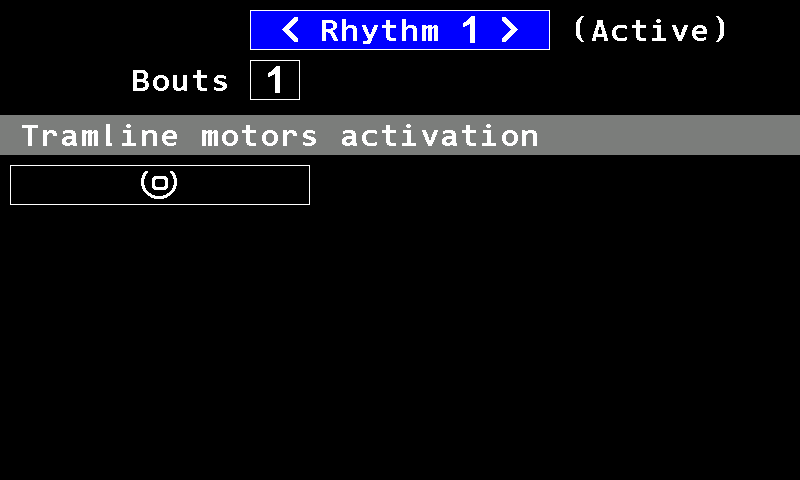
- Rhythm. The number of the rhythm; “PLUS” and “MINUS” step through the three.
- “Active”. This rhythm is the one in use.
- “Bouts”. The number of bouts in the rhythm.
- Activation heading. “Tramline actuators activation” on a machine that makes tramlines with actuators; “Tramline motors activation” on one that stops dispenser motors.
- Framed cell. Adds an actuator (or motor) and its cut-off bout.
In the form, “UP” and “DOWN” move between lines, “MINUS” and “PLUS” along a line, “MENU” opens the selected cell. Moving to the next bout while working: Move to the next tramline bout.
Move to the next tramline bout
How the bout changes by itself at the headland, what it needs to do so, and how to change or correct it by hand.
The tramline indicator on the home screen shows the current bout above and the number of bouts in the rhythm below. The bout can change by itself at every turn, or you change it by hand — both from the bout menu, opened with a short press of “BACK” on the home screen.

Automatic change
The panel can change the bout by itself only if something tells it that a bout has ended:
| On the machine | What ends a bout |
|---|---|
| Marker sensors in the profile | At least one marker sensor under control and answering. The change of the marker position ends the bout. |
| No markers | The work position sensor, under control and answering. Raising the implement out of work ends the bout. |
| Neither | Automatic change is impossible. Change the bout by hand. |
On top of that, “Auto-switching” must be “Yes”, and the machine must actually have been applying and then stopped. All of it together — otherwise the bout stays where it is. When the bout cannot change by itself, the tramline icon on the home screen is yellow (Tramline bout).
On the home screen, press “BACK”. The bout menu opens.
On “Auto-switching”, choose “Yes” with “PLUS”.
Press “BACK” to close the menu.
By hand
What the bout menu offers depends on the machine:
- Without a sensor that can end a bout, it offers “Next bout”. Select it and press “MENU”: the bout moves on by one and the menu closes. Do it at every turn.
- With such a sensor, it offers “Auto-switching” instead. To correct the count — after a missed turn, say — set “Active bout” with “PLUS” / “MINUS”; the new bout takes effect when you close the menu.
“Active bout” is in the menu on every machine. Check the indicator on the home screen before you start a pass.
The rhythm itself is set up in Set up the tramline rhythm.
Set the screen brightness
Make the screen brighter, dimmer or automatic — one item in the Settings menu.
On the home screen press “MENU”, select “Settings” and press “MENU”.
“Brightness,%” is the first item. Change it with “PLUS” and “MINUS”, from 0 to 100 in steps of 10.
The Settings menu with Brightness,% selected and set to AUTO. Press “BACK” to leave the menu. The new brightness stays in force.
0 means automatic — the menu shows “AUTO”. The panel measures the light in the cab and sets the screen itself: bright in the sun, dim at night. Any other value fixes the screen at that percentage.
The button backlight always follows the screen: when the screen dims, the buttons dim with it.
Everything else in the Settings menu: The Settings menu.
Work without the speed sensor
When the speed sensor fails in the field — finish the work on a simulated speed and control the application by hand.
Symptom. The speed field shows XX.X in red, or the speed stays at zero although the machine moves. Without a speed, the panel cannot calculate area, rates or deviations, and the dispenser motors do not know how fast to turn.
Cause. The speed sensor or its input device does not answer, or the wheel no longer gives pulses. See Speed sensor alarms.
What to do. Finish the field on a simulated speed and switch the application on and off by hand.
On the home screen, touch and hold the speed field. Its context menu opens.
Set “Imitation, km/h” to the speed you will drive. This item needs the Agronomist level: Enable the Agronomist level.
Return to the Operator level, so that alarms are shown again.
The speed field now shows a yellow figure alternating with “IMITATION” (Speed).
Control the application with the manual lock: hold “HOME” to stop applying at the headland, hold it again to start on the next pass. While the lock is on, the yellow hand shows at the right edge and the speed reads zero. See Lock application by hand.
Drive at the speed you set. The rates are right only as long as the real speed matches it.
When the sensor is repaired, set “Imitation, km/h” back to 0.
Details of the speed sensor settings: Speed sensor.
Access levels
The three access levels of the Hectare One, what each one allows, and how to switch between them.
Not every setting is open to everyone. The panel has three working access levels. After every power-on it starts at the lowest one, “Operator”.
| Level | What it allows |
|---|---|
| “Operator” | Everyday work. Some parameters cannot be changed, and the statistics cannot be reset. |
| “Agronomist” | Resetting the statistics, the seeding machine parameters, the product rate error and the other commissioning settings. Needs a PIN. |
| “Service” | The profile and the reset-to-defaults items. For the service department. Needs a PIN. |
A fourth level, “Debug”, exists above “Service”. It is used at manufacture only; see The Service menu.
Every settings table in this manual names the level an item needs. An item above your level is not shown in the menu at all.
Switch the level
The level is changed in the “Settings” menu, item “User”, and nowhere else — there is no button combination for it. Going up a level asks for the PIN; going down does not. Step by step, with the screens: Enable the Agronomist level.
The PIN is different for every panel. Take it from the device passport or ask the service support.
What happens to the alarms while the level is high
The alarms are not lost while they are hidden — they wait. When you lower the level, the panel drops the ones that have gone away in the meantime and shows the ones that are still true, one window after another. After an hour of commissioning at “Agronomist”, expect a short run of alarm windows on the way back down. It is the backlog, not a new fault. How the windows work: How alarms work.
Enable the Agronomist level
The steps, with the screen of each, to raise the access level to "Agronomist" or "Service" before changing settings, and to return to "Operator" afterwards.
Most set-up work — sensor parameters, calibrations, device configuration — needs the “Agronomist” level. The “Service” level is raised the same way. What each level allows: Access levels.
You need the PIN of this panel. It is different for every panel; take it from the device passport or ask the service support.
On the home screen press “MENU”. The main menu opens.
The main menu. Select “Settings” with “UP” / “DOWN” and press “MENU”. The “Settings” menu opens.
The Settings menu at the Operator level. Press “DOWN” until “User” is selected — it is near the end of the menu. Press “PLUS” until it reads “Agronomist” (or “Service”).
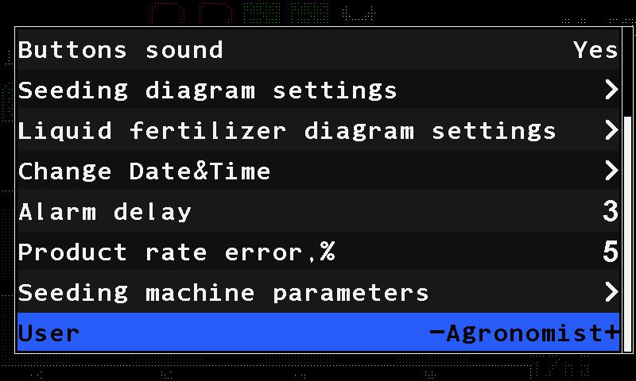
“User” set to Agronomist. Press “MENU”. The PIN pad opens. Its heading names the level you chose — “Agronomist” — followed by the code of this panel; have that code at hand when you ask the service support for the PIN. Type the PIN and touch “OK”.
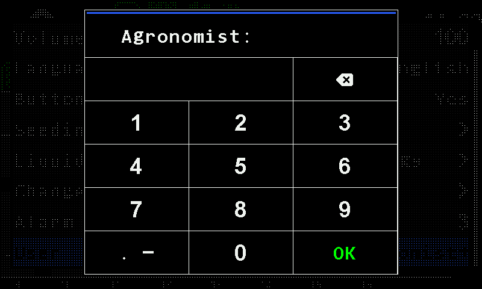
The PIN pad. The code beside the prompt is covered in this manual. The “Settings” menu returns, now with the items of the new level — for example “Seeding machine parameters”. Press “BACK” to leave.
When you come back down, the alarms that are still true are shown one after another. See Access levels.
The profile
What the profile tells the panel, how to check it, what each profile item allows, and when the panel refuses a profile.
The profile tells the panel which devices, and how many of each, are on the machine. A panel usually arrives with the profile already set. Check it before you set anything else: a device missing from the profile is never watched, and a device in the profile that is not fitted raises “Connection lost”.
Check the profile on the home screen
Switch the panel on and wait a few seconds. Then look at the home screen:
- No “Connection lost” alarm — the panel has found every device the profile declares.
- No white indicators with an exclamation mark — no device is left out of control.
- No red indicators with an “X” — every device answers.
What the indicators mean: Indicators. How to take a device into control or out of it: Take a sensor in and out of control.
Open the profile
The profile is at the “Service” level: raise the level (Enable the Agronomist level — choose “Service”), then “MENU” → “Service” → “Profile”.
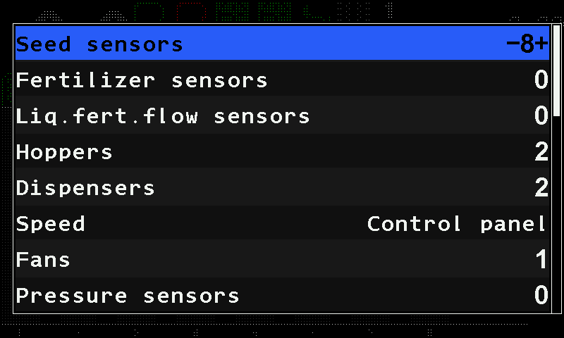
- “Seed sensors” — the number of seed sensors. The selected item shows its value between – and +: change it with “MINUS” / “PLUS”.
- “Fertilizer sensors” — dry fertilizer sensors.
- “Liquid fertilizer flow sensors” — liquid fertilizer section sensors.
- “Hoppers” — hopper level sensors.
- “Dispensers” — dispenser shaft sensors.
- “Speed” — where the travel speed comes from.
- “Fans” — fan speed sensors.
- “Pressure sensors” — air pressure sensors.
- Scroll bar. More items follow below — see the table.
The profile items
| Item | Range |
|---|---|
| “Seed sensors” | 2 … 120. The menu lets you enter 1, but such a profile is refused when it is saved. |
| “Fertilizer sensors” | 0 … 60; seed and fertilizer sensors together not more than 120. |
| “Liquid fertilizer flow sensors” | 0 … 60 |
| “Hoppers” | 0 … 9 |
| “Dispensers” | 0 … 9 |
| “Speed” | “No” / “Control panel” (sensor wired to the panel) / “Input device” (one wheel sensor on the input device) / “Input device (2)” (two wheel sensors on the input device). |
| “Fans” | 0 … 2 |
| “Pressure sensors” | 0 … 3 |
| “Work position sensor” | “No” / “Yes” |
| “Markers” | “No” / “One” / “Both” |
| “No battery charge”, “Emergency oil pressure”, “Ignition”, “Low fuel”, “Air filter” | The engine sensors — “No” / “Yes” each. |
| “Seed dispenser motors” | 0 … 60 |
| “Fertilizer dispenser motors” | 0 … 30; both motor groups together not more than 60. |
| “Tramline actuators” | 0 … 4 |
| “Liquid fertilizer pump controller” | 0 … 1 |
On a panel built for a system without electric motors, the two motor items are not in the menu.
When the panel refuses a profile
The panel checks the whole profile, not only the item you changed. It refuses a profile when:
- the hopper, dispenser and engine sensors together come to more than 12;
- they come to more than 10 while the pressure and fan sensors together come to more than four;
- the pressure and fan sensors together come to more than five;
- there are fertilizer motors but no seed motors, or fertilizer motors but no fertilizer sensors;
- there are electric motors or a liquid fertilizer pump but no speed sensor;
- liquid fertilizer valves and a pump controller are declared at the same time.
Save the profile
After changing the profile, select “Save profile” at the end of the “Profile” menu and press “MENU”. The panel asks “Are you sure?”.

The confirmation window. Touch “Yes”. The panel shows “Wait...”, then “Saved” and “Restart system”, and restarts by itself.
If nothing was changed, the panel only shows “No changes”. If the profile breaks one of the rules above, it shows “Invalid profile!” in red and saves nothing.
Saving all the settings of a profile, and moving them on a memory card: Save and load settings.
Save and load settings
Keep a copy of all the settings of the current profile in the panel or on a memory card, and bring it back — for example to move one panel between implements.
For the current profile the panel can save all the settings and restore them later — useful before you try something out. With a memory card in the slot, a profile can also be saved to the card together with its settings, so one panel can serve several implements.
| Item in the “Profile” menu | What it does |
|---|---|
| “Save settings” / “Load settings” | Keep a copy of the settings inside the panel, and bring it back. |
| “Save to SD-card” / “Load from SD-card” | The same with the memory card; the profile travels with its settings. Without a card, saving ends with “Insert SD-card”. |
At the “Service” level the menu also holds “Save factory defaults”: after “Are you sure?” it saves the settings as “Save settings” does and also keeps them, with the profile, as the panel's factory copy, which no menu item of this firmware loads back.
Raise the level (Enable the Agronomist level — choose “Service”) and open “MENU” → “Service” → “Profile” (The profile).
Scroll down to the item you need and press “MENU”. “Save settings” and “Load settings” ask “Are you sure?”.
The confirmation window. Touch “Yes”. The panel answers “Saved” or “Loaded”.

The panel confirms with “Saved”.
Profile files on the memory card
- Files are named automatically P0001.pfl and stored in the PROFILES folder of the card. You may rename a file — keep the name to eight characters, Latin letters and digits.
- “Load from SD-card” opens a list of the profiles on the card. A profile file written by one firmware version is very likely not readable by another: an incompatible profile is shown in red in that list.
The Settings menu
Every item of the panel's own "Settings" menu — brightness, volume, language, alarm delay, diagram settings, date and time — with its range and access level.
The “Settings” menu holds the settings of the panel itself. Open it from the home screen: “MENU” → “Settings”. The settings of the individual sensors are elsewhere — see Sensor settings.
- “Brightness,%” — the backlight. “AUTO” lets the panel set it from its light sensor.
- “Volume” — the loudness of the panel's sounds.
- “Language” — the language of the screens.
- “Buttons sound” — a sound on every button press.
- “Seeding diagram settings” — how the seed diagram is drawn. Below.
- “Change Date&Time” — the clock. Below.
- “Alarm delay” — how long a fault must last before the alarm window opens.
- “Seeding machine parameters” — width, modes, tramline, calibrations. Seeding machine parameters.
- Scroll bar. More items follow below.
The items
| Item | Range | Level |
|---|---|---|
| “Brightness,%” | 0 … 100, in steps of 10. At 0 the item reads “AUTO” and the panel sets the backlight from its light sensor — brightening quickly, dimming slowly. Any other value fixes the backlight. | Operator |
| “Volume” | 0 … 100, in steps of 10 | Operator |
| “Language” | the installed languages | Operator |
| “Buttons sound” | “No” / “Yes” | Operator |
| “Seeding diagram settings”, “Fertilizer diagram settings”, “Liquid fertilizer diagram settings” | Submenus. Each is shown only when the machine has a speed sensor, its own sensors are in the profile and its diagram is not in the “Flow” mode. | Operator |
| “Change Date&Time” | submenu | Operator |
| “Alarm delay” | 2 … 20 s, default 3 s. See How alarms work. | Operator |
| “Product rate error,%” | 3 … 20 %. Shown only when a product is dosed by weight or a liquid fertilizer pump controller is in the profile. | Agronomist |
| “Seeding machine parameters” | Submenu. Hidden when the machine has neither a speed sensor nor a tramline actuator. | Agronomist |
| “User” | The access level — see Access levels. | Operator |
| “Reset settings” | Returns this menu to the factory values. | Service |
On a machine with two groups of seed sensors, the two diagram items read “Seeding gr.A diagram” and “Seeding gr.B diagram”.
The settings are saved by themselves a few seconds after the last press. Wait a moment before you switch the panel off.
Diagram settings

There are three of these menus — seed, dry fertilizer, liquid fertilizer — with the same items:
| Item | What it does |
|---|---|
| “Skips & Doubles” | Shows the skip and double bars over the last stretch of the path. “Precise” mode only. |
| “Grid” | “No” — only the rate line; “Partial” — only the tolerance limits; “Full” — both. |
| “Scale S&D,%” | The height of the skip and double bars, 5 … 50 % in steps of 5. “Precise” mode only. |
| “Reset to defaults” | Returns this menu to the factory values. Service level only. |
Change Date and Time
Select “Change Date&Time” and press “MENU”. The date and time fields open.
The date and time fields. Select each field with “UP” / “DOWN” and set it with “PLUS” / “MINUS”.
Select “Set” and press “MENU”. The clock takes the new values. “BACK” instead leaves the clock unchanged.
Seeding machine parameters
The working width, the modes of seeding and fertilizing, the tramline, the mapping of sections to actuators, and the two calibrations that need the machine to move.
“Settings” → “Seeding machine parameters”. The item needs the “Agronomist” level (Enable the Agronomist level) and is hidden on a machine with neither a speed sensor nor a tramline actuator. Which items it holds depends on the profile.
- “Width, cm” — the working width. The selected value stands between –[** and **]+.
- “Mode of seeding” — “Flow”, “Hybrid” or “Precise”.
- “Tramline” — the tramline submenu.
- “Speed calibration” — starts the speed calibration.
- “Reset to defaults” — factory values for this menu. Service level only.
Width, cm
The working width of the implement. The worked area is calculated from it, so it must be entered. Press “MENU” on the item: the number pad opens. Type the digits — the key at the top right deletes the last one — and touch “OK” to accept, or press “BACK” to keep the old value.
Mode of seeding, Mode of fertilizers
Three modes each:
| Mode | Unit | For |
|---|---|---|
| “Flow” | seeds per second | grain drills |
| “Hybrid” | seeds per metre | grain drills — recommended |
| “Precise” | seeds per metre, with skips and doubles counted | precision planters |
Mode of liquid fertilizer
“Flow” (litres per minute) or “By area” (litres per hectare). Shown only when there is no liquid fertilizer pump controller in the profile — with a controller the panel chooses the mode itself.
Actuators to sensors mapping
Which section sensors belong to which tramline actuator or electric motor. When that actuator shuts its sections off, their sensors switch to tramline monitoring.
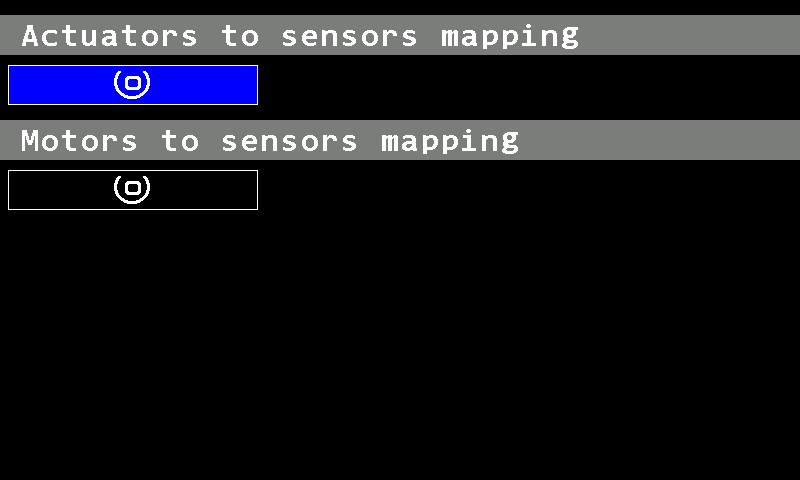
A mapping is a range: “Range start” and “Range end” — equal numbers mean a single section. Up to four ranges can be attached to one actuator. On a machine with metering motors the screen also has “Motors to sensors mapping”.
Tramline
The rhythms of the tramline, in a submenu of its own with two items: “Tramline” (“No” / “Yes”) and “Tramline rhythm settings”.
Setting up a rhythm: Tramline rhythm.
Speed calibration and Dispenser calibration
The two calibrations that need the machine to move. “Dispenser calibration” carries a number beside it: the dispenser to calibrate, or 0 for all of them at once.
Sensor settings
How to reach the settings of one sensor, what its context menu holds, and which calibrations exist.
Every sensor, actuator and motor on the machine has its own settings and its own status screen. Both are reached from the home screen. The parameters of each kind of sensor are in the topics that follow this one.
Reach a sensor
On the home screen hold “MENU” for a few seconds. The panel enters the sensor setting mode; the selected sensor is drawn inside a white rectangle.
Move from sensor to sensor with “UP” / “DOWN”. “PLUS” takes the selected sensor into control, “MINUS” takes it out — see Take a sensor in and out of control.
Press “MENU”. The context menu of the selected sensor opens.

The context menu of the speed sensor. Press “BACK” to leave the mode.
Holding a sensor tile on the screen opens the same context menu directly.
The context menu

- “Information” — opens the status screen of this sensor. The sensor status screen.
- “Disable control” / “Enable control” — takes the sensor out of monitoring, or back in. The first time in a session the panel asks for confirmation.
- The parameters of this sensor — here the three of a fan sensor. Which of them you see depends on the access level.
- The current value. Select the line; the value stands between – and + and changes with “MINUS” / “PLUS”.
- “Reset to defaults” — returns this sensor's parameters to the factory values. Service level only.

The status screen
“Information” opens the status screen of the sensor: its identity, its link, its live figures and its active alarms. How to read it: The sensor status screen.
Calibrations
Four calibrations exist. They are not variants of one procedure: each writes different parameters and is reached a different way.
| What it puts right | Where | Level | Machine |
|---|---|---|---|
| Travel speed — the pulses of the speed sensor over a known distance. Calibrate the speed sensor | “Settings” → “Seeding machine parameters” → “Speed calibration” | Agronomist | drives 100 m |
| Dispenser rotation — “Wheel, pulses” against “Dispenser pulses”. Calibrate the dispenser rotation | “Settings” → “Seeding machine parameters” → “Dispenser calibration” | Agronomist | wheel and dispenser shaft turned together |
| Dispenser mass — “Weight, gr” and “Weight, pulses”. Calibrate the dispenser by weight | context menu of the dispenser sensor | Operator | standing |
| Metering roller mass — “Weight, gr” and “Rotations” of one motor. Calibrate a metering motor by weight | context menu of the dispenser electric motor | Operator | standing |
The two menu calibrations need the “Agronomist” level, like the menu that leads to them. The two mass calibrations are at the “Operator” level, because they have to be repeated whenever the product changes.
The sensor status screen
How to read the status screen of a sensor — channel, address, type, link state, live figures and active alarms — and what each kind of sensor shows on it.
Reached through “Information” in the context menu of a sensor (Sensor settings). It shows what the panel knows about one sensor.
The screen

- “Channel #” — which sensor of the whole list this is.
- Previous sensor — or press “MINUS”. The screen stays open.
- Next sensor — or press “PLUS”.
- “Address:” — the address the sensor answers on. Not shown in this manual.
- “Type:” — the kind of sensor and its number, here hopper sensor 1. Some sensors show a line “Unit:” instead of the address — where they are connected, for example “Control panel”.
- “Link:” — the state of the communication. Table below.
- The figures of this kind of sensor — here the level on the input of a hopper sensor. Table below.
- “Alarm 1 from 1” — the active alarms, one at a time. “UP” / “DOWN” step through them.
- The name of the alarm shown.
| Button | Action |
|---|---|
| “PLUS” / “MINUS” | Next / previous sensor — the screen stays open. |
| “UP” / “DOWN” | Step through the active alarms of this sensor. |
| “MENU” | The context menu of this sensor. |
| “BACK” | Back to the sensor selection. |
Link states
| State | Meaning |
|---|---|
| “Normal” | The sensor answers. |
| “Not controlled” | The sensor is out of control: neither the communication nor anything else is watched. |
| “No connection” | The sensor does not answer. Red. |
| “Wrong device type!” | Something answers, but not the kind of device the profile expects. Red. |
| “IMITATION” | Speed sensor only: the speed is simulated, not measured. Yellow. |
The figures are drawn only while the sensor is under control, answers, and is of the expected kind. A sensor out of control shows its identity and nothing else.
What each kind of sensor adds
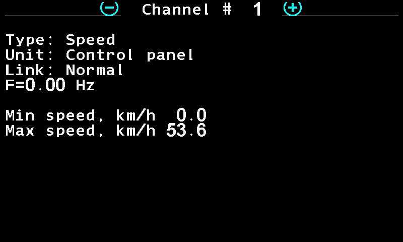
| Sensor | What the screen shows |
|---|---|
| Speed sensor | The pulse frequency F= in Hz; with two speed sensors F1= and F2=. Under it the two limits “Min speed, km/h” and “Max speed, km/h”. On a machine that doses a product by weight with electric motors, the limits are those the motors can hold, narrowed by the two settings; a limit the settings cannot meet is written in red as an inequality. Without such motors a limit set to zero is shown as ----, switched off. |
| Hopper sensor | Pin: and the level on the input, "0" or "1". |
| Dispenser shaft sensor | F= in Hz, to three decimals. |
| Fan sensor | F= in Hz. |
| Pressure sensor | P= in kPa. |
| Seed sensor, dry fertilizer sensor | Status: and one of eight states — below. |
| Liquid fertilizer flow sensor | Status: Working, or Working:Tramline in the tramline mode; under it Flow= in L/min. |
| Work position sensor | Position: Working or Position: Transporting, and Pin: with the level on the input. |
| Ignition, oil pressure, battery charge, fuel level, air filter | Pin: and the level on the input, "0" or "1". |
| Marker sensor | Only the common lines. |
| Tramline actuator | Status: Pulled in, Pulled out, Working while the shutter moves, or Unknown. |
| Dispenser electric motor | Status: Working, or Faulty while any alarm of the motor is active; then Last fault: with the controller's code, if there has been one (codes). A universal controller adds IN1[ ] IN2[ ] IN3[ ] with the levels on its three inputs. |
| Liquid fertilizer pump controller | Status: Working or Faulty. With a fault, Last fault: and the code. Without one: Flow= in L/min, Load= in per cent, and Pressure sensor: No if there is none, otherwise Pressure sensor= in Bar with the raw signal in mA in brackets. Dashes stand for a value the controller cannot give. |
The eight states of a seed or fertilizer sensor
| Status | Meaning |
|---|---|
| Working | Normal. |
| Working:Tramline | Normal; the sensor is in the tramline control mode for the current bout. |
| Configuring | The sensor has received new settings and is applying them. |
| Calibration in progress | The sensor runs its initial calibration. It takes a few seconds. |
| Clogged | The infrared emitter of the optical channel is blocked — most likely a blocked seed tube. Red. |
| Light struck | Too much sunlight falls into the optical channel; the sensor may miscount. Red. |
| Faulty | The sensor has failed and must be replaced. Red. |
| Unknown | Another fault that cannot be identified. Red. |
Travel speed sensor
The parameters of the travel speed sensor — pulses, wheel diameter, speed limits, imitation — and what setting the imitation does by itself.
Everything the panel counts — area, rates, deviations — is worked out from the distance travelled. A speed sensor that is out by a tenth makes every other figure on the panel wrong by a tenth. Set its parameters first, then calibrate it (Calibrate the speed sensor).
Open the context menu of the speed sensor as described in Sensor settings. All its parameters need the “Agronomist” level (Enable the Agronomist level).
The context menu also offers “Speed calibration” directly, under “Information”.
| Parameter | What it does | Range |
|---|---|---|
| “Pulses” | The pulse figure of the sensor. Set it before the calibration, which corrects it. | 1 … 1000 |
| “Count period” | How many pulses of the sensor the panel averages the travel speed over; a higher value gives a steadier figure. Acts only on a speed sensor wired to the panel itself. | 1 … 1000 |
| “Diameter, cm” | The wheel diameter. Set it before the calibration. | 10 … 200 |
| “Factor, %” | The drive ratio to the wheel; 100 is a direct 1 : 1 drive. | 1 … 10000 |
| “Seeding criteria” | “Yes”: the alarms of the seed, dry fertilizer and liquid fertilizer sections are raised only while the machine moves. “No”: also while it stands. Hidden, and always “Yes”, in the “Precise” mode and on machines with metering motors or a liquid fertilizer pump controller. | “No” / “Yes” |
| “Min speed, km/h” | Below this speed the home screen shows “FASTER”. 0 switches the check off. | 0 … 99 |
| “Max speed, km/h” | Above this speed the home screen shows “SLOWER”. 0 switches the check off. | 0 … 99 |
| “Imitation, km/h” | A simulated speed. 0 = the real sensor is used. | 0 … 20 |
| “Width, cm” | The track between the two wheels of a two-sensor installation. | 0 … 10000 |
| “GPS”, “GPS internal” | Take the speed from a receiver instead of the wheel. | “No” / “Yes” |
The minimum must be below the maximum, otherwise the panel raises “Error in settings of Min/Max” (Speed sensor alarms).
The imitated speed is also held inside the range the dosing allows: a value outside it is pulled back to the nearest limit as you enter it. While the speed is imitated, the status screen of the sensor shows “IMITATION” in yellow. Working without a speed sensor: Work without a speed sensor.
The status screen
The status screen shows the pulse frequency F= in Hz (with two sensors F1= and F2=) and the two limits in force. See The sensor status screen.
Calibrate the speed sensor
Drive a marked 100 m so that the panel corrects the pulse figure of the travel speed sensor.
The calibration corrects the pulse figure of the speed sensor against a known distance. Before you start, set “Pulses” and “Diameter, cm” of the sensor (Travel speed sensor) — the calibration corrects the pulse figure; it cannot invent it. You need the “Agronomist” level (Enable the Agronomist level).
Mark out 100 m on level ground and put the machine at the start.
Open “Settings” → “Seeding machine parameters”, select “Speed calibration” and press “MENU”. The panel shows “Pass 100m and press STOP” with a single “STOP” button.
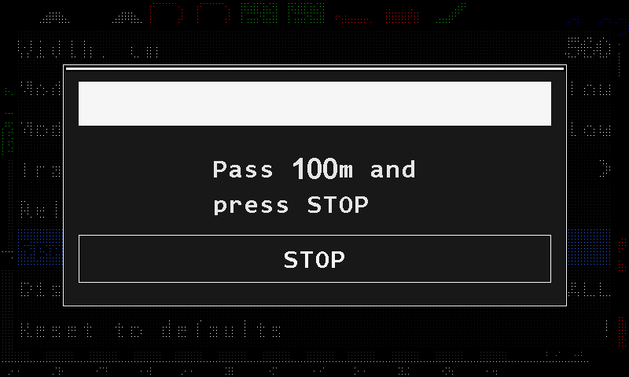
The speed calibration window. Drive the marked distance and stop at the end.
Touch “STOP”. The panel shows “Done” and closes the window by itself.
The panel confirms with “Done”.
The distance is fixed at 100 m; the panel does not ask for it. It waits half a second after “STOP” before reading the counter and checks the connection once more in that moment — a sensor that drops out on the last metre is reported as a lost connection, not as a bad result.
When it does not work
| The panel shows | Meaning |
|---|---|
| “No speed sensor” | The profile has no speed sensor. The calibration does not start. |
| “Connection lost with the sensor! Calibration canceled!” | The sensor does not answer. |
| “Sensor not controlled! Calibration canceled!” | The sensor is out of control. Take it into control (Take a sensor in and out of control). |
| “FAILURE! The tractor did not move!” | The counter did not move: the sensor gave no pulses at all — not an inaccurate reading, none. Check the sensor and its cable. |
| “Calibration canceled!” | The window was closed some other way than with “STOP”. Nothing has changed. |
Seed sensors and dry fertilizer sensors
The parameters shared by a group of optical seed or dry fertilizer sensors — target rates, fraction, sensitivity, rate error, skips and doubles, tramline tolerance.
Seed sensors and dry fertilizer sensors are the same kind of device and share one parameter set. Almost everything here is common to the whole group: change it on one sensor and it changes for all sensors of the group. Only two things are set per sensor — whether it is under control (“Disable control” / “Enable control”) and “Product application”. Open the context menu of any sensor of the group as in Sensor settings.

| Parameter | What it does | Range | Level |
|---|---|---|---|
| “Flow rate” | The rate for the “Flow” mode, in seeds per second. Below it the section raises the low-rate alarm. | 1 … 1500 | Operator |
| “Hybrid rate” | The target in the “Hybrid” mode. | 1 … 200 | Operator |
| “Precise rate,x10” | The target in the “Precise” mode, in tenths. | 5 … 500 | Operator |
| “Sensitivity” | The sensitivity of sensors of an older generation; the panel sends it to them. Shown only when such a sensor is connected. | 1 … 120 | Agronomist |
| “Fraction” | The count filter of the sensors, set for the size of the seed or granule; the panel sends it to every sensor of the group. The rate, skip and double alarms tell you which way to change it. | 1 … 100 | Operator |
| “Correction” | A fine adjustment of seed detection for the sensor generation that uses it; the panel sends it to those sensors only, and the item appears only when one is connected. Default 300. | 100 … 3300, steps of 10 | Operator |
| “Rate error,%” | How far the actual rate may stand from the target before an alarm. | 5 … 95, steps of 5 | Agronomist |
| “Doubles error,%” | The share of doubles that raises an alarm. “Precise” mode only. | 0 … 95 | Agronomist |
| “Skips error,%” | The share of skips that raises an alarm. “Precise” mode only. | 0 … 95 | Agronomist |
| “Recalculation,m” / “Recalculation,sec” | The stretch the skips and doubles are counted over — in metres or in seconds, depending on the mode. | 10 … 50 | Operator |
| “Percent of sowing,%” | The share of the seed rows under control that must sow before the panel takes the drill as seeding; until then the seed and dry fertilizer sensors raise no rate, skip, double or tramline alarm. Seed sensors only; hidden on machines with metering motors or a liquid fertilizer pump controller. | 5 … 80, steps of 5 | Agronomist |
| “Tolerable sowing to tramline,%” | How much a section that should be shut off for the tramline may still deliver. | 0 … 50 | Agronomist |
| “Group start address” | Set at commissioning — see Device configuration. | Service |
The target rates themselves are changed while you work, on the home screen — see Change the target rate. The status screen of these sensors shows one of eight states — see The sensor status screen. If a sensor reports “Clogged”, “Light struck” or “Broken”: Sensor clogged or broken.
Liquid fertilizer sensors and pump controller
The parameters of the liquid fertilizer section sensors and of the liquid fertilizer pump controller.
Liquid fertilizer is watched by flow sensors in the sections; on some machines a pump controller also drives the pump to the rate. Open the context menu of either as in Sensor settings.
Liquid fertilizer section sensors
| Parameter | What it does | Range | Level |
|---|---|---|---|
| “Pulses per liter” | The pulses the flow sensor gives per litre; the panel turns them into litres per minute, litres per hectare and the volume applied. Hidden when a pump controller is in the profile — the controller's figures are used then. | 1 … 60000 | Agronomist |
| “Rate error,%” | How far the actual rate may stand from the target before an alarm. | 5 … 95, steps of 5 | Agronomist |
| “Tolerable leak to tramline,%” | How much a section shut off for the tramline may still deliver. | 0 … 50 | Agronomist |
| “Group start address” | See Device configuration. | Service |
The two target rates of this sensor — one for the “Flow” mode, one for the “By area” mode — have no menu item. They are set on the home screen with “PLUS” and “MINUS”, like every other target rate (Change the target rate). The mode itself: Seeding machine parameters.
Liquid fertilizer pump controller
| Parameter | What it does | Range | Level |
|---|---|---|---|
| “Pulses per liter” | How many pulses of the pump drive make one litre; the panel works out the volume applied from it. The figure is kept in the pump controller: the panel reads it at start-up and writes a change back to it. | 100 … 10000, steps of 10 | Agronomist |
| “Pressure sensor” | Which pressure sensor watches the supply line. | 0 … 2 | Agronomist |
| “Pressure boundary, Bar” | The pressure the pressure sensor reads at the top of its range, from the sensor's specification; the panel scales the line pressure with it. Default 16.0 bar. | 0.0 … 50.0 | Agronomist |
| “Max pressure, Bar” | Above it the controller raises “High pressure”. | 0.0 … 50.0 | Operator |
| “Section control D.I.” | Has no effect in this firmware: the panel does not read this input for the pump. | “No” / “Shut off(0)” / “Shut off(1)” | Agronomist |
| “Start delay,mS” | The shortest time between two starts of the pump: a start that would come sooner waits until this time has passed. Default 30 ms. | 0 … 500, steps of 5 | Service |
| “Group start address” | See Device configuration. | Agronomist |
The status screen of the pump controller shows the flow, the pump load and the line pressure — see The sensor status screen. Alarms: Liquid fertilizer pump, Rate alarms.
Dispenser shaft sensor
The parameters of the dispenser shaft sensor — rotation control against the wheel, or weight control by the mass applied.
The dispenser shaft sensor counts the turns of a dispenser driven from the ground wheel. The panel can watch it two ways: by its rotation against the speed sensor, or by the mass of product it applies. Open its context menu as in Sensor settings.

| Parameter | What it does | Range | Level |
|---|---|---|---|
| “Period, s” | The longest time between two shaft pulses. If the shaft gives no pulse for longer while the machine sows or moves, the panel raises “No rotation”. Default 10 s. | 1 … 60 | Operator |
| “Rotation speed control” | Watch the shaft rotation against the travel speed. | “No” / “Yes” | Agronomist |
| “Wheel, pulses” | Set by the rotation calibration. | 1 … 65535 | Agronomist |
| “Dispenser pulses” | Set by the rotation calibration. | 1 … 65535 | Agronomist |
| “Maximum error, %” | How far the shaft speed may stand from the speed the travel speed calls for; beyond it, while the machine moves, the panel raises “Low speed of rotation” or “High speed of rotation”. Shown only when “Rotation speed control” is “Yes”. Default 10 %. | 1 … 50 | Agronomist |
| “Weight control” | Watch the dispenser by the mass applied instead of by its rotation. | “No” / “Yes” | Agronomist |
| “Type of product” | Which product this dispenser meters. | Agronomist | |
| “Weight, gr” / “Weight, pulses” | Both set by the calibration by weight. | 1 … 65535 each | Agronomist |
With “Weight control” switched on, the context menu also holds “Dispenser calibration(weight)”.
Calibrations
- Rotation — for “Rotation speed control”: Calibrate the dispenser rotation.
- Mass — for “Weight control”; repeat it whenever the product changes: Calibrate the dispenser by weight.
The status screen shows the shaft pulse frequency F= in Hz, to three decimals. Its alarms: Fan or dispenser shaft: speed alarms, and with weight control Dosing by weight.
Calibrate the dispenser rotation
Turn the drive wheel and the dispenser shaft together so that the panel learns how many shaft pulses belong to one wheel pulse.
This calibration teaches the panel how many dispenser shaft pulses belong to one wheel pulse, so that it can tell a stopped shaft from a moving machine. It is the basis of “Rotation speed control” of the dispenser sensor (Dispenser sensor). It writes “Wheel, pulses” and “Dispenser pulses”.
Before you start: the speed sensor and every dispenser taking part must be under control and answering. You need the “Agronomist” level (Enable the Agronomist level).
Open “Settings” → “Seeding machine parameters” → “Dispenser calibration”. Set the number of the dispenser with “PLUS” / “MINUS” — or 0 for all of them at once — and press “MENU”. The panel shows “Calibration” and a progress bar.
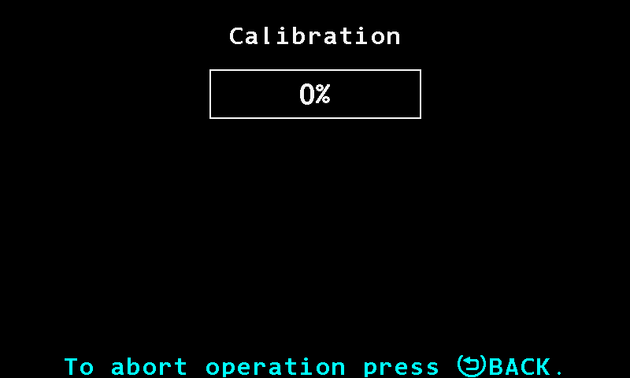
The progress bar of the dispenser calibration. Turn the drive wheel and the dispenser shaft together — by hand, or by moving the machine. The bar fills as the counters rise.
Keep turning until the bar reaches 100 %. That happens when the speed sensor and every dispenser taking part have each given at least 100 pulses. The bar follows whichever is furthest behind — a dispenser that does not turn holds it at zero.
At 100 % the panel beeps once and shows “Stop rotation!”. Stop everything.
The panel waits until no counter has changed for two seconds, then writes the result and shows “Done”.
“To abort operation press BACK.” stands at the bottom of the screen; “BACK” stops the calibration at any moment.
If any sensor taking part is out of control or does not answer, the calibration ends with “Sensor not controlled! Calibration canceled!” or “Connection lost with the sensor! Calibration canceled!”.
Calibrate the dispenser by weight
Turn a ground-driven dispenser into a container and weigh the product, so that the panel can watch the rate in kilograms per hectare.
This calibration stores how many grams one dispenser shaft pulse delivers — “Weight, gr” and “Weight, pulses” of the dispenser sensor. Repeat it whenever the product changes. It is done standing, at the “Operator” level; the panel raises itself to “Agronomist” for the length of the calibration and puts the level back on exit.
You need: a container that holds 2 to 60 kg of the product, and scales.
The item is only there when “Weight control” is switched on for this dispenser (Dispenser shaft sensor).
Hold the tile of the dispenser sensor and choose “Dispenser calibration(weight)”. The first screen lists the target rates of the products in use, in kg/ha; the product of this dispenser is marked with > and <.
Touch “Calibrate dispenser N” (or press “PLUS”). If the dispenser cannot be calibrated, a red line stands there instead with the reason: “Not controlled”, “No connection” or “FAILURE”. “Exit” (or “BACK”) leaves.
The second screen gives the preparation. Weigh the empty container and write the weight down.
Fill the hopper with the product and place the empty container under the dispenser.
Turn the rotor until its cells are filled. This matters more than it looks: a rotor with empty cells gives short measure for the first turns, and that error lands in the stored figure.
Touch “Go to calibration” (or press “UP”). “Cancel” (or “BACK”) steps back. The third screen counts “Impulses” and turns a rotor icon as they arrive.
Empty the container and place it under the dispenser again.
Turn the dispenser rotor and fill the container as far as possible — not less than 2 kg and not more than 60 kg.
Touch “Complete” (or press “MINUS”). The button appears only after more than ten pulses. “Cancel” asks “Are you sure?” before throwing the measurement away.
Weigh the filled container. The number pad asks to “Enter the difference of the filled and empty container in grams”. Type the weight of the product alone — 2000 to 60000 g; the pad offers 10000 — and touch “OK”. The panel stores “Weight, gr” and “Weight, pulses”.
Dispenser electric motor
The parameters of an electric metering motor — gear ratio, direction, speed window, product, calibration figures and the calibration button.
An electric motor drives a dispenser at the speed the panel works out from the target rate and the travel speed. Open its context menu as in Sensor settings.
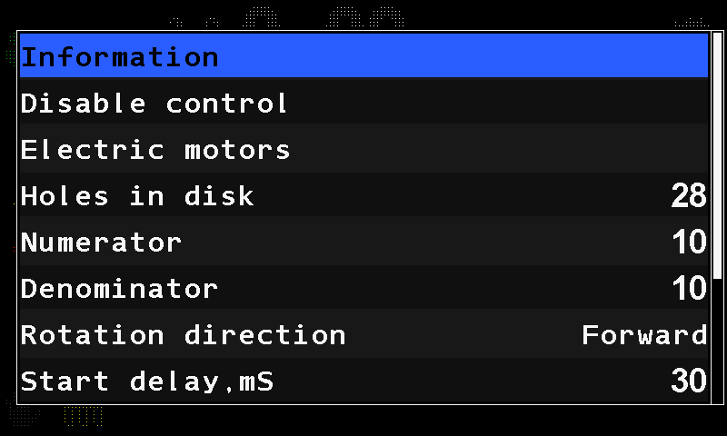
| Parameter | What it does | Range | Level |
|---|---|---|---|
| “Holes in disk” | “Precise” mode only. | 1 … 200 | Operator |
| “Numerator” / “Denominator” | Together: the gear ratio between the motor and the dispenser shaft. | 1 … 500 each | Agronomist |
| “Rotation direction” | The direction the motor turns. Set it so that the dispenser turns the right way for how the motor is fitted; default “Forward”. | “Forward” / “Backward” | Agronomist |
| “Rollback when jammed” | Back the rotor off and try again instead of stalling. | “No” / “Yes” | Agronomist |
| “Section control D.I.” | Lets a switch on the section-control input of the motor controller stop this motor: “Shut off(0)” stops it while the input reads 0, “Shut off(1)” while it reads 1; “No” ignores the input. | “No” / “Shut off(0)” / “Shut off(1)” | Service |
| “Start delay,mS” | The shortest time between the start of one metering motor and the next: a motor that would start sooner waits, so the motors start one after another. Default 30 ms. | 0 … 500, steps of 5 | Service |
| “Group start address” | Set at commissioning — see Device configuration. | Service | |
| “Type of product” | Which of the four products this motor meters. | Agronomist | |
| “Weight, gr” / “Rotations” | Both set by the calibration by weight. | 1 … 65535 each | Agronomist |
| “Minimum, rpm” / “Maximum, rpm” | The shaft speed window the panel may use. | 0.1 … 500.0 each | Agronomist |
| “Button input” | Digital input of the motor controller used as a calibration button; “No” = none. | No, 1 … 3 | Agronomist |
| “Activation signal” | Which state of that input counts as pressed. | 0 / 1 | Agronomist |

“Minimum, rpm” and “Maximum, rpm” are not a safety limit but the window the rate control works in. The dosing speed window on the calibration screen is worked out from them together with the roller figures. “Button input” and “Activation signal” let one person start the motor from the dispenser during the calibration — see Calibrate a metering motor by weight.
The status screen shows “Working” or “Faulty” and the last fault code (Read the fault code of an electric motor). Alarms: Metering motor alarms, Dosing by weight. The controller itself is set up in Configure the motor controllers. “Electric motors” in the context menu (“Service” level) opens the Motors screen on this motor — the same screen as “Service” → “Electric motors” (Motor controller diagnostics).
Calibrate a metering motor by weight
Let the electric motor turn the metering roller into a container and weigh the product, so that the panel knows how much one turn delivers.
This calibration stores how much product one turn of the metering roller delivers — “Weight, gr” and “Rotations” of one motor. Repeat it whenever the product or the roller changes. It is done at the “Operator” level.
You need: the machine standing still, a container that holds 1 to 60 kg of the product, and scales.
Hold the tile of the motor and choose “Dispenser calibration(weight)”.
The motor's context menu with the calibration item at the top. The first screen shows the target rates and, under “Product dosage speed limitation:”, the “Min speed, km/h” and “Max speed, km/h” the current settings allow. If it reads “Can not provide dosage!” in red, the roller fitted cannot deliver the rate at any speed — calibration will not repair that; fit another roller. Otherwise touch “Calibrate electric motor N” (or press “PLUS”).
The second screen prepares the rotor. Weigh the empty container and write the weight down. Fill the hopper and place the empty container under the dispenser.
Touch “Fill the rotor cells” (or press “MENU”). The motor turns the driven shaft exactly two turns and stops by itself. “Stop motor” (“BACK”) interrupts it. Repeat until the cells are full.
Touch “Go to calibration” (or press “UP”). The third screen shows “Rotations” to one decimal.
Empty the container and place it under the dispenser again.
Touch “Calibration” (or press “MENU”): the motor runs. Touch “Stop motor” (or press “BACK”) to stop it. Run and stop as often as needed — the counter keeps a running total. Fill the container as far as possible, not less than 1 kg and not more than 60 kg.
Touch “Complete” (or press “MINUS”). It appears once more than one full turn has been made.
Weigh the filled container. The number pad asks for the difference of the filled and empty container in grams — 1000 to 60000 g. Type it and touch “OK”. The panel stores “Weight, gr” and “Rotations” for this motor.
During the rotor filling the motor runs at the middle of its “Minimum, rpm” … “Maximum, rpm” window, but not faster than 60 rpm.
Run the motor from a button at the dispenser
If “Button input” of the motor is set to an input (1 … 3) and “Activation signal” is set to match that button (Dispenser electric motor), a button on that input starts and stops the motor exactly as “Calibration” and “Stop motor” do: the motor runs while the button is held and stops when it is released. One person can stand at the dispenser with the container instead of walking to the cab between runs. The screen shows the same buttons whether or not such a button is set up — the panel gives no hint of it.
When the calibration stops by itself
The calibration ends with a failure if the motor stops answering, if the motor raises an alarm, or if ten seconds pass without pulses from the rotation sensor — then the panel shows “No data from rotation sensor”. A jammed or unplugged rotation sensor ends the run rather than quietly storing zero.
Fan sensor
The parameters of the fan speed sensor — the allowed speed band and the pulses per turn.
The fan sensor watches the speed of the fan of a pneumatic drill or planter. Open its context menu as in Sensor settings — the picture there shows exactly this menu.
| Parameter | What it does | Range | Level |
|---|---|---|---|
| “Minimum, rpm” | Below it the panel raises “Low speed of rotation”. | 500 … 9000, steps of 500 | Operator |
| “Maximum, rpm” | Above it the panel raises “High speed of rotation”. | 500 … 9000, steps of 500 | Operator |
| “Pulses” | How many pulses one turn of the fan gives. | 1 … 60 | Agronomist |
The status screen shows the pulse frequency F= in Hz. Alarms: Fan or dispenser shaft: speed alarms.
Pressure sensor
The parameters of the air pressure sensor — the smoothing filter and the allowed pressure band.
The pressure sensor measures the positive pressure or the vacuum of the air system. Open its context menu as in Sensor settings.
| Parameter | What it does | Range | Level |
|---|---|---|---|
| “Filter” | How strongly the reading is smoothed. | 1 … 16 | Agronomist |
| “Minimum, Pa” | The lower limit of the allowed band. | 0 … 10000, steps of 100 | Operator |
| “Maximum, Pa” | The upper limit of the allowed band. | 0 … 10000, steps of 100 | Operator |
The status screen shows the pressure P= in kPa. Alarms: Air pressure. Giving a new pressure sensor its address: Configure a pressure sensor.
Marker sensors
The parameters of the marker sensors — which marker a sensor watches and which input state means "lowered".
The marker sensors tell the panel which marker is down. The profile declares “No”, “One” or “Both” (The profile). Open the context menu of a marker sensor as in Sensor settings.
| Parameter | What it does | Level |
|---|---|---|
| “Connected marker” | “Left” or “Right”. | Agronomist |
| “Signal "down"” | Which state of the input means the marker is lowered. | Agronomist |
The status screen of a marker sensor shows only the common lines.
Hopper, work position and engine sensors
The settings of the two-state sensors — hopper level, work position of the implement, and the five tractor engine sensors.
These sensors report one of two states and nothing more. Open the context menu of any of them as in Sensor settings. Their status screen shows Pin: and the level on the input, "0" or "1".
Hopper sensor
The hopper sensor has no parameters of its own — its context menu holds only the three common items.
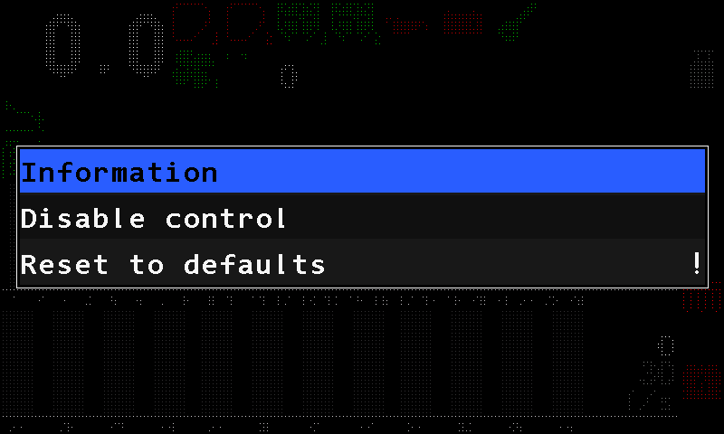
Alarm: Hopper empty.
Work position sensor
The work position sensor tells the panel whether the implement is lowered for work or raised for transport. The status screen shows Position: Working or Position: Transporting.

| Parameter | What it does | Range | Level |
|---|---|---|---|
| “Transporting position signal” | Which state of the input means the transport position. | 0 / 1 | Agronomist |
The menu can also hold “Alarms criteria” (“Yes” / “No”, “Agronomist” level): with “Yes”, the default, the seed, fertilizer and dispenser shaft alarms are not raised while the implement is in the transport position; the item is hidden, and always “Yes”, on machines with metering motors or a liquid fertilizer pump controller.
Engine sensors
“No battery charge”, “Emergency oil pressure”, “Ignition”, “Low fuel” and “Air filter” are five separate inputs, each switched on in the profile on its own (The profile).
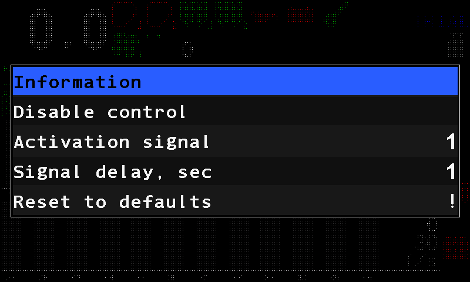
| Parameter | What it does | Level |
|---|---|---|
| “Activation signal” | Which state of the input is the one worth reporting. | Agronomist |
| “Signal delay, sec” | How long that state must hold before it counts. Defaults: 15 s for the fuel level, 5 s for the air filter. | Agronomist |
Alarms: Tractor engine alarms.
Tramline actuator
The two parameters of the tramline actuator, where the rest of its settings live, and what its status screen shows.
The tramline actuator shuts the sections of the tramline bout. It has two parameters of its own, in its context menu (Sensor settings):
| Parameter | Values | Level |
|---|---|---|
| “Cutoff position” | “Pulled out” / “Pulled in” — the position of the actuator in which its sections are shut off. Default “Pulled out”. | Agronomist |
| “Switch” | “when seeding” / “always” — when the actuator is switched. Default “when seeding”. | Agronomist |
The rest of its settings live elsewhere:
| What | Where |
|---|---|
| The address and the marker channels of its controller | Configure a tramline actuator controller |
| The rhythm — which bout shuts which actuator | Tramline rhythm |
| Which sections belong to the actuator | “Actuators to sensors mapping” — Seeding machine parameters |
The status screen of the actuator shows Status: Pulled in, Pulled out, Working while the shutter is moving, or Unknown. Alarms: Tramline alarms.
Device configuration — before you start
What device configuration is, the preparation it needs, and the three-item pattern every configuration menu follows.
When a system is commissioned, or a sensor is replaced, each new device must be given its address — the number by which the panel finds it on the sensor network. That is done in “Service” → “Sensors Configuration”, one device at a time.
Prepare
Disconnect every sensor from the network connector of the panel.
Connect only the one device that is to be given a new address.
Switch the panel on. Alarms about lost communication appear — close them all (How alarms work).
Raise the access level to “Agronomist” — see Enable the Agronomist level.
Press “BACK”, then choose “Service” → “Sensors Configuration”. The menu offers four kinds of device.

The “Sensors Configuration” menu.
The pattern
All four menus work the same way:
| Item | What it is |
|---|---|
| “Sensor address” / “Device address” | Which device the menu talks to. Leave it at “AUTO” and the panel talks to the single device that answers. Pressing “MENU” on this item starts a search; each further press steps to the next device found. |
| “New address” | The address the device is to take. Set it with “PLUS” / “MINUS”. |
| “Set” | Writes it. “Done” means the device has accepted it. |
Afterwards, every time: disconnect the device and connect it again, return to the home screen and check that it appears where it should. Then set the level back to “Operator” — or switch the panel off and on, which does the same.
The devices
| Device | Topic |
|---|---|
| Seed sensor | Configure a seed sensor |
| Pressure sensor | Configure a pressure sensor |
| HUB8 input device | Configure a HUB8 |
| Tramline actuator controller | Configure a tramline actuator controller |
| Electric motor controllers — their own way in | Configure the motor controllers |
Configure a seed sensor
Give a new or replaced seed sensor the number of its row.
For a seed sensor the new address is simply the number of the row — the same number the operator sees under the column on the home screen. Prepare first as in Device configuration: only this sensor on the cable, “Agronomist” level.
The address of a seed sensor can only be changed while the sensor is working normally. A tube sensor is ready as soon as it is connected. An open sensor must sit on its bracket, or be held so that no daylight falls into the optical channel — the gap between the two glasses. In direct light the sensor reports a permanent seed flow and does not accept the new address.
Choose “Service” → “Sensors Configuration” → “Seed sensor” and press “MENU”. The menu has three items.

The “Seed sensor” configuration menu. Leave “Sensor address” at “AUTO”.
Select “New address” and set the row number with “PLUS” / “MINUS”.
Select “Set” and press “MENU”. The panel answers “Done”.
The panel confirms with “Done”. Disconnect the sensor and connect it again. On the home screen, check that it appears under its row.
When all sensors are done, set the level back to “Operator”, or switch the panel off and on.
Configure a pressure sensor
Give a new or replaced air pressure sensor its address.
Prepare first as in Device configuration: only this sensor on the cable, “Agronomist” level. The menu has the same three items as every configuration menu. The address values are not printed in this manual: take them from the data sheet of the system.
Choose “Service” → “Sensors Configuration” → “Pressure sensor” and press “MENU”. The menu shows “Sensor address”, “New address” and “Set”.
Leave “Sensor address” at “AUTO”.
Select “New address”. The panel proposes the correct value for the first pressure sensor by itself; each further sensor takes the next one. Check the value against the data sheet and correct it with “PLUS” / “MINUS” if needed.
Select “Set” and press “MENU”. The panel answers “Done”.
Disconnect the sensor and connect it again. On the home screen, check that its indicator appears.
When all sensors are done, set the level back to “Operator”, or switch the panel off and on. Its parameters: Pressure sensor.
Configure a HUB8
Tell a HUB8 input device which sensor is wired to each of its eight channels.
The HUB8 carries several sensors at once. Its menu is longer than the others: after the device address come its eight channels, each with a type and a number. Prepare first as in Device configuration: only this HUB8 on the cable, “Agronomist” level.
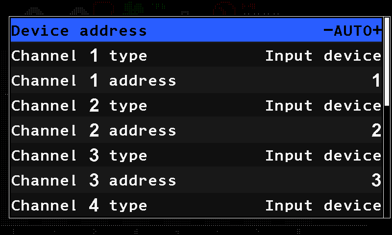
- “Device address” — which HUB8 the menu talks to. Leave it at “AUTO”.
- “Channel 1 type” — what kind of sensor is wired to channel 1.
- “Channel 1 address” — which sensor of that kind it is: hopper 1, dispenser 2, and so on.
- The value of the selected item, changed with “PLUS” / “MINUS”.
- Scroll bar. Channels 2 to 8 follow in the same pairs, then “Set”.
The type and the number together make the sensor appear on the home screen under the right icon.
Choose “Service” → “Sensors Configuration” → “HUB8” and press “MENU”.
Leave “Device address” at “AUTO”.
For each channel that carries a sensor, set “Channel N type” and “Channel N address” with “PLUS” / “MINUS”. Leave a channel that carries nothing as it is.
Select “Set” at the end of the menu and press “MENU”. The panel answers “Done”.
Disconnect the HUB8 and connect it again. On the home screen, check that each sensor appears under its icon.
When all devices are done, set the level back to “Operator”, or switch the panel off and on.
Configure a tramline actuator controller
Tell an actuator controller which tramline actuator it drives and which marker sensors are wired to it.
The actuator controller carries three things at once — the tramline actuator and the two marker sensors of the bout — and each has its own line. That is why one controller serves an actuator and both markers. Prepare first as in Device configuration: only this controller on the cable, “Agronomist” level.

- “Device address” — which controller the menu talks to. Leave it at “AUTO”.
- “Actuator” — the number of the tramline actuator this controller drives, or “No” if it drives none.
- “Input device, channel 1” — the first marker sensor, or “No”.
- “Input device, channel 2” — the second marker sensor, or “No”.
- “Set” — writes the three lines to the controller.
Choose “Service” → “Sensors Configuration” → “Tramline actuator” and press “MENU”.
Leave “Device address” at “AUTO”.
Set “Actuator”, “Input device, channel 1” and “Input device, channel 2” with “PLUS” / “MINUS”.
Select “Set” and press “MENU”. The panel answers “Done”.
Disconnect the controller and connect it again. On the home screen, check that the actuator and the markers appear.
When all devices are done, set the level back to “Operator”, or switch the panel off and on. The actuator's own settings: Tramline actuator; the markers: Marker sensors.
Configure the motor controllers
Give a metering motor controller its address, choose the kind of controller, and set its parameters.
The controllers that drive the metering motors are not addressed from “Sensors Configuration”. They have their own way in, their own choice of controller kind and their own parameters.
Open the motor controller menu
Raise the level to “Service” (Enable the Agronomist level — choose “Service”).
Press “MENU” → “Service” → “Electric motors”. The Motors screen opens.

The Motors screen of motor 1, page “Registers”. Press “MENU” on the Motors screen. Two items appear, both at the “Agronomist” level: “Change address” and “Configuration”.

The menu of the Motors screen.
On a panel built for a system without electric motors, “Electric motors” is not in the “Service” menu at all.
Change the address
Select “Change address” and press “MENU”. Three items open.
“Motor address” — the address the controller answers on now. Leave it as found.
“New address” — the address it is to take. Take it from the data sheet of the system; the values are not printed in this manual.
Select “Set” and press “MENU” to write it.
Choose the controller kind
“Configuration” opens the configuration of the controller. Four kinds are supported, offered by number:
| Kind | What it is |
|---|---|
| “1)universal” | The universal controller: two DC channels or one stepper channel on the same board. |
| “2)DC motor” | A DC motor controller. |
| “3)STEPPER fw0.006+” | A stepper controller, firmware 0.006 and later. |
| “4)BGxxCI” | A BG45CI motor with the controller built in, on the older board. |
The panel reads the kind back from the controller and opens on the one that answers. Choosing another kind by hand is how a replacement board is set up — not a way to change what a motor is.
Set the parameters
Every configuration menu ends with “Set”, and “Set” carries a value of its own: the address group, 0 to 3. Nothing reaches the controller until “Set” is entered — the items above it change the numbers the panel holds, not those the controller runs on.
| Kind | What it is given |
|---|---|
| STEPPER | “Pulses” 1 … 8192 — the pulses of one turn of the motor shaft; “Motor type” from a list; “Set”. |
| BGxxCI | “Pulses” 1 … 8192; “Set”. Nothing else — the controller carries the rest. |
| DC motor | “Pulses”, “Motor type”, the regulator terms “PID kP”, “PID kI”, “PID kD” (0 … 65535, read as hundredths), “TURBINA” 0/1, and two speed–time pairs “TIME1” / “SPEED1”, “TIME2” / “SPEED2”; “Set”. |
| universal | The largest set, in three menus: “Work mode”, “Inputs setup” and “Parameters”. |
The “Parameters” menu of the universal controller:
| Parameter | Range |
|---|---|
| “Motor type” | 0 … 255, from the controller's own table |
| “Pulses” | 1 … 8192 per shaft turn |
| “Acceleration,Ms” / “Deceleration,Ms” | 50 … 65535 — the ramp up and down |
| “Minimum, rpm” / “Maximum, rpm” | 0 … 65535 — the shaft speed window |
| “PID kP”, “PID kI”, “PID kD” | 0 … 65535, hundredths |
| “!! Temp,*C” | 0 … 200 — the temperature at which the controller alarms |
| “I_peak,A” / “I_peak,mS” | the peak current and how long it may be drawn |
| “I_push,A” / “I_push,Sec” | the breakaway current and its time |
| “I_hilo,A” / “I_hilo,Sec” | the sustained-current threshold and its time |
| “Set” | writes all of it, at the chosen address group |
The items “PID kP”, “PID kI”, “PID kD”, “TURBINA”, “TIME1”, “SPEED1”, “TIME2”, “SPEED2”, “!! Temp,*C”, “I_peak,A”, “I_push,A”, “I_hilo,A” and their time partners read the same in every language of the panel.
Reading what the controller reports: Motor controller diagnostics.
Motor controller diagnostics
How to read what a metering motor controller reports about itself on the Motors screen — speed, error code, voltages, temperature, current, status bits and fault counters.
The Motors screen is also the diagnostic screen of a motor controller. It shows, live, what the controller reports about itself. Open it with “MENU” → “Service” → “Electric motors” (“Service” level). The working view of the same screen is described in Motors screen.
- “Motor #1” — which motor is shown. (−) / (+) step to the previous / next motor.
- “Registers” — the name of the page.
- The status word — sixteen bits of the controller; a lit (yellow) cell is a bit that is set.
- The legend of the bits — the number and the name of each bit. Table below.
- “Speed” / “Target speed” — what the shaft is doing against what the panel asked for. A gap that does not close is the first sign of a load the motor cannot carry.
- “Error code” / “Act.posit.” — the controller's own error number (codes), and the position it counts itself at.
- “Volt.mot.,mV” / “Volt.elec.,mV” — the voltage at the motor and at the electronics, in millivolts. A motor voltage far below the electronics voltage means the supply sags under load.
- “Temperat.,C” / “Current,mA” — the controller's temperature and the current it draws. Compare the current with “I_hilo,A” set for this motor (Configure the motor controllers).
The status bits
| Bit | Name | Bit | Name |
|---|---|---|---|
| 0 | Enable | 8 | Toggle |
| 1 | Error | 9 | CmdTgl |
| 2 | Warn. | 10 | CmdErr |
| 3 | Moving | 11 | StpHalt |
| 4 | Reach | 12 | LimCur |
| 5 | Limit | 13 | LimVel |
| 6 | FolErr | 14 | LimPos |
| 7 | HomDone | 15 | LimSVel |
The legend is drawn in English on every panel, whatever its language: it is a bit map of the controller, not a message to the operator.
The fault counters
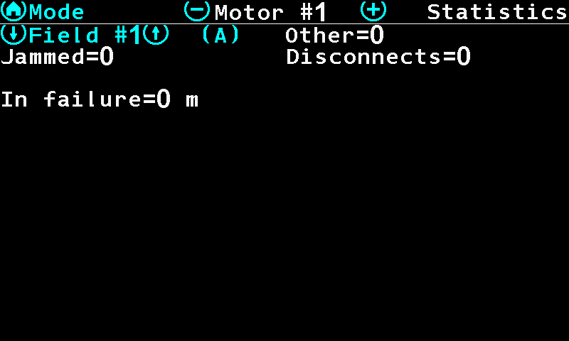
The faults this motor has collected on the chosen field — they are part of the field statistics, not of the motor:
| Counter | What it counts |
|---|---|
| “Jammed” | The rotor stalled and the controller had to give up or back off. |
| “Disconnects” | The controller stopped answering. |
| “Other” | Everything else the controller reported, overcurrent and overtemperature included — they have no counter of their own. |
| “In failure” | The distance in metres this motor spent in a fault state. |
Each counter is white at zero and red once it is not. A red figure does not mean the motor is faulty now — it means it was, somewhere on this field, and the seed placed there is worth a look.
How alarms work
When the Hectare One raises an alarm, what the alarm window shows, how to close it, and how to use the alarm topics of this manual.
An alarm is a window that opens over the working screen, with a warning tone. It tells you that one device — a sensor, an actuator, a motor controller — or the system as a whole has found a fault. The alarm topics in this section are grouped by the device that raises the alarm. Look for the words you see on the screen, not for a description of them.
When the panel raises an alarm
A fault is not reported the moment it appears. The condition must hold without a break for the time set in “Alarm delay” before the alarm window opens.
| Setting | Value |
|---|---|
| Where it is set | “Settings” menu, item “Alarm delay”. Available at the “Operator” access level. See The Settings menu. |
| Range | 2 to 20 seconds, in steps of 1 second. |
| Default | 3 seconds. A value outside the range is reset to the default by itself. |
A short delay makes the panel react quickly, but also to brief disturbances — a single bump, a momentary gap in the seed flow. A long delay keeps the screen quiet, but a real fault can run for up to twenty seconds before you are told.
Two cases do not follow the delay:
- Lost communication is counted in polls, not in seconds. “Connection lost” appears after three polls in a row without an answer from the device.
- Right after a sensor has been set up, its alarms are not processed for a short blocking period. This prevents a burst of alarms while a device is being configured.
The alarm window

- “FAILURE!” — the title of every alarm window, whatever the fault. It is not the fault itself.
- The alarm text — the fault. Look it up under this text in the alarm topics.
- The kind of device that raises the alarm — here a hopper sensor. The same text can come from different devices; this line tells you which.
- The number of the device — here hopper 2. When several devices of the same kind raise the same alarm, they share one window and are listed together, for example #3-5,8.
- “Close” — closes this alarm. Below.
The alarms of the panel itself carry the line “HOME - close message” in their text instead of a device line. The alarms of the sensors do not.
Closing an alarm
| What you do | What happens |
|---|---|
| Touch the red “Close” button in the window, or press “HOME” | This alarm closes. If more alarms are waiting, the next one opens. While the window is open, “HOME” is the only lit button. |
| Hold “HOME” | Every open alarm window closes at once and the panel returns to the home screen. |
Closing a window does not repair the fault. The alarms of a sensor that are still active are listed on its status screen — see The sensor status screen.
Alarms are hidden at the higher access levels
At the “Agronomist” and “Service” levels alarm windows are not shown. They are not lost: they wait. When you return to “Operator”, the panel drops the ones that have gone away and shows the ones that are still true, one after another. See Access levels.
Not alarms: SLOWER and FASTER
When the travel speed leaves the permitted range, no alarm window opens. The home screen shows “SLOWER” or “FASTER” instead, and keeps showing it while you correct the speed. See Indicators.
How the alarm topics are written
Every alarm has its own heading with the text exactly as on the screen; where the message has two lines on the panel, both lines are given. Under it: what the panel has detected, and what to check, in the order a mechanic checks it — the quick checks on the panel first, then the machine, then the sensor itself.
Any device: connection lost or wrong device type
The two alarms any sensor, actuator, controller or input device can raise — no answer from the device, or the wrong kind of device answering.
These two alarms are not tied to one kind of device. The name of the device in the alarm window tells you which one is affected. How the window works: How alarms work.
“Connection lost”
What it means. The panel has received no answer from the device in three polls in a row. This applies to sensors, actuators, controllers and the input device alike.
What to check, in this order:
- The device is connected to the network.
- The cable and the connector of the device.
- The power supply of the device. It must meet the values in the device passport.
“Wrong device type!”
What it means. A device of another kind answers where the panel expects a device of this kind. The cause is either a wrong setting in the system profile or a wrong configuration of the device itself.
What to do: call the service support. Do not try to correct it by changing the profile or the device configuration at random — see Device configuration.
Fan or dispenser shaft: speed alarms
What to do when the fan or the dispenser shaft turns too slowly, too fast, or not at all.
The fan sensor and the dispenser shaft sensor use the same two messages. The device name in the alarm window tells you which one it is. How the window works: How alarms work.
“Low speed of rotation” / “High speed of rotation”
What it means. The fan or the dispenser shaft turns slower or faster than allowed.
What to check, in this order:
- The component being watched — the fan or the dispenser and its drive.
- The settings of the sensor: for the fan “Minimum, rpm”, “Maximum, rpm” and “Pulses” — see Fan sensor; for the dispenser — see Dispenser sensor.
- Dispenser only: the travel speed on the panel matches the real speed.
- The sensor itself is serviceable.
- Dispenser only: run the calibration — see Calibrate the dispenser rotation.
“No rotation”
What it means. The dispenser shaft does not turn. Only the dispenser shaft sensor raises this alarm.
What to check, in this order:
- The dispenser and its drive.
- The settings of the sensor — see Dispenser sensor.
- The sensor itself is serviceable.
Hopper empty
What to do when the panel reports that a hopper is running empty.
The hopper sensor sits in the hopper at a fixed height. It reports when the product falls below it. How the window works: How alarms work.
“Hopper empty”
What it means. The level of the product in the hopper is very low. The hopper needs refilling.
What to check, in this order:
- Fill the hopper.
- If the product stands above the height at which the sensor is mounted and the alarm stays, check that the sensor is serviceable. Its status screen shows the level on its input as “0” or “1” — see The sensor status screen.
The hopper sensor has no settings of its own beyond the common ones — see Hopper, implement position and engine sensors.
Air pressure too high or too low
What to do when the pressure sensor of the air system reports a pressure or vacuum outside the allowed range.
The pressure sensor measures the positive pressure or the vacuum of the air system. Both alarms look at the absolute value — the size of the pressure or vacuum, whichever it is. The sensor's limits are described in Pressure sensor. How the window works: How alarms work.
“High pressure”
What it means. The measured pressure or vacuum is greater than allowed.
What to check, in this order:
- Reduce the speed of the fan or turbine.
- The position of the regulating damper of the air intake, if there is one.
- The tube to the pressure sensor is connected correctly, and the measuring line is free of blockages.
“Low pressure”
What it means. The measured pressure or vacuum is less than allowed.
What to check, in this order:
- Increase the speed of the fan or turbine.
- The position of the regulating damper of the air intake, if there is one.
- The air duct for leaks.
- The tube to the pressure sensor is connected correctly, and the measuring line is free of blockages.
Application rate too low, too high, or not under control
What to do when the seed, dry fertilizer or liquid fertilizer sensors report a rate below or above the allowed band, or too little product to start control at all.
The section sensors — seed, dry fertilizer and liquid fertilizer — compare the rate they measure with the target. How the window works: How alarms work.
“Not under control!” / “Check seeding rate”
What it means. Over the set number of section sensors, the rate of the product is below the minimum needed for the panel to start controlling the application at all.
What to check, in this order:
- The travel speed on the panel matches the real speed.
- The target rate, or the minimum alarm rate — which one depends on the control mode of the group of sections.
- There is enough product in the hoppers or in the tank.
- Seed or dry fertilizer sensor: “Fraction” in its settings. The value may have to be reduced. See Seed and fertilizer sensors.
- Liquid fertilizer sensor: “Pulses per liter” in its settings. The value may have to be reduced. See Liquid fertilizer.
- The metering unit: is it serviceable, and is it adjusted correctly?
“Under allowable rate”
What it means. A section sensor — seed, dry fertilizer or liquid fertilizer — has measured too little product during work.
What to check, in this order:
- There is enough product in the hoppers or in the tank.
- The travel speed on the panel matches the real speed.
- Seed or dry fertilizer sensor: “Fraction”. The value may have to be reduced.
- Liquid fertilizer sensor: “Pulses per liter”. The value may have to be reduced.
- Seed sensor: its status on the status screen (“Information” in its context menu) — see The sensor status screen.
- The metering unit: is it serviceable, and is it adjusted correctly?
“Over allowable rate”
What it means. A section sensor — seed, dry fertilizer or liquid fertilizer — has measured too much product during work.
What to check, in this order:
- The travel speed on the panel matches the real speed.
- Seed or dry fertilizer sensor: “Fraction”. The value may have to be increased.
- Liquid fertilizer sensor: “Pulses per liter”. The value may have to be increased.
- Seed sensor: its status on the status screen.
- The metering unit: is it serviceable, and is it adjusted correctly?
Too many doubles or skips
What to do when a seed sensor of a precision planter counts more doubles or skips than allowed.
Doubles and skips are counted only in the “Precise” mode of seeding — on a precision planter. How the window works: How alarms work.
“High % of doubles”
What it means. The share of doubles the sensor counts is higher than the set limit.
What to check, in this order:
- The travel speed on the panel matches the real speed.
- “Doubles error,%” in the settings of the seed sensor — is the limit sensible? See Seed and fertilizer sensors.
- “Fraction” in the settings of the seed sensor. The value may have to be increased.
- The sensor's status on its status screen — see The sensor status screen.
- The metering unit: is it serviceable, and is it adjusted correctly?
“High % of skips”
What it means. The share of skips the sensor counts is higher than the set limit.
What to check, in this order:
- The travel speed on the panel matches the real speed.
- There is enough seed in the hoppers.
- “Skips error,%” in the settings of the seed sensor — is the limit sensible?
- “Fraction” in the settings of the seed sensor. The value may have to be reduced.
- The sensor's status on its status screen.
- The metering unit: is it serviceable, and is it adjusted correctly?
Tramline: actuator stalled or product in the tramline
What to do when the tramline actuator jams, its position sensors contradict each other, or a shut-off section still delivers product.
The tramline actuator shuts the sections of the tramline bout. Two gate position sensors tell the panel where its shutter stands. How the window works: How alarms work.
“Stall”
What it means. The tramline actuator has jammed.
What to check, in this order:
- The gate position sensors of the actuator are serviceable.
- The mechanism of the tramline actuator is serviceable.
“Illegal state”
What it means. Both gate position sensors have been triggered at the same time. With a serviceable installation this cannot happen.
What to check: the gate position sensors are serviceable.
“Seeding to tramline”
What it means. A section that should be shut off for the tramline still delivers too much product. The seed sensor, the dry fertilizer sensor or the liquid fertilizer sensor of that section has measured it in the tramline control mode.
Seed sensor or dry fertilizer sensor — check, in this order:
- The metering unit and the flow cut-off mechanism are serviceable.
- “Tolerable sowing to tramline,%” in the settings of the group of section sensors. The value may have to be increased. See Seed and fertilizer sensors.
- “Fraction” in the settings of the group of the alarming sensor. The value may have to be increased.
- The sensor's status on its status screen — see The sensor status screen.
Liquid fertilizer sensor — check, in this order:
- The metering unit and the flow cut-off mechanism are serviceable.
- “Tolerable leak to tramline,%” in the settings of the group of section sensors. The value may have to be increased. See Liquid fertilizer.
Seed or fertilizer sensor clogged, light-struck or broken
What to do when an optical seed or fertilizer sensor reports a blocked channel, too much light, a fault of its own, or outdated firmware.
The seed and dry fertilizer sensors count the product optically: an emitter shines across the channel, a receiver sees each grain. These alarms report the state of the sensor itself, not the rate. How the window works: How alarms work.
“Clogged”
What it means. The seed or dry fertilizer sensor has detected that its optical channel is blocked.
What to do, in this order:
- Remove the blockage.
- Check for a build-up of dust in the channel.
- Check the power supply of the sensor. It must meet the values in the device passport.
“Light struck”
What it means. The seed or fertilizer sensor has detected an extremely high level of light in its optical channel.
What to do: keep direct sunlight out of the optical channel of the sensor.
“Broken”
What it means. The seed or dry fertilizer sensor has detected a fault of its own. It may have to be replaced.
What to do: check the power supply of the sensor. It must meet the values in the device passport. If the power supply is in order, the sensor may have to be replaced — call the service support.
“Old firmware! Wrong S&D calc!”
What it means. A seed sensor with outdated firmware is in use. It counts, but its skips and doubles cannot be trusted.
What to do: call the service support to have the firmware of the sensor updated.
Tractor engine: oil pressure, battery charge, fuel, air filter
What to do when one of the on-board engine sensors — oil pressure, battery charge, fuel level, air filter — raises an alarm.
All on-board engine sensors share one alarm text: “FAILURE”. The name of the sensor above the text tells you which one has triggered. How the window works: How alarms work. The settings named below are described in Hopper, implement position and engine sensors.
“Emergency oil pressure” — “FAILURE”
What it means. The low oil pressure sensor has triggered.
What to check, in this order:
- The low oil pressure sensor is serviceable.
- “Activation signal” in the settings of the low oil pressure sensor.
- If an ignition key sensor is in the profile: is its monitoring switched on?
- If an ignition key sensor is in the profile: is it serviceable?
“No battery charge” — “FAILURE”
What it means. The battery is not being charged.
What to check, in this order:
- The battery charge sensor is serviceable.
- “Activation signal” in the settings of the battery charge sensor.
- If an ignition key sensor is in the profile: is its monitoring switched on?
- If an ignition key sensor is in the profile: is it serviceable?
“Low fuel” — “FAILURE”
What it means. Little fuel is left in the tank.
What to check, in this order:
- The fuel level sensor is serviceable.
- “Activation signal” in the settings of the fuel level sensor.
- “Signal delay, sec” in the settings of the fuel level sensor. The default is 15 seconds.
“Air filter” — “FAILURE”
What it means. The air filter is clogged.
What to check, in this order:
- The air filter sensor is serviceable.
- “Activation signal” in the settings of the air filter sensor.
- “Signal delay, sec” in the settings of the air filter sensor. The default is 5 seconds.
Product rate by weight too low, too high, or impossible
What to do when a product dosed by weight — by an electric motor or a weight-controlled dispenser — misses its target rate, or cannot reach it at all.
These alarms are raised by the system as a whole, not by one device. They exist for each of the four products separately: the number in the message is the number of the product. How the window works: How alarms work.
“Rate of Product 1” / “is too low!” — or — “is too high!”
The same for Product 2, 3 and 4.
What it means. The product is applied below or above its target rate in kilograms per hectare.
Product metered by an electric motor — check, in this order:
- The target rate of the product.
- The speed limits in force, on the status screen of the speed sensor — see The sensor status screen.
- The settings of the electric motor that drives the dispenser shaft — see Dispenser electric motor.
- The metering unit.
- The rotation sensor of the electric motor is serviceable.
- The working load of the motor. Below 20 % or above 80 %, try a metering roller of another size: a larger one if too little is applied, a smaller one if too much.
- Calibrate the metering roller — see Calibrate a metering motor by weight.
Dispenser sensor with “Weight control” switched on — check, in this order:
- The target rate of the product.
- The settings of the dispenser shaft rotation sensor — see Dispenser sensor.
- The metering unit.
- The dispenser sensor is serviceable.
- Calibrate the metering roller — see Calibrate the dispenser by weight.
“Product dosage is” / “impossible! Check product” / “rate and calibration!”
What it means. With the current settings and target rate, the product cannot be applied by weight at all.
What to check, in this order:
- The target rate of the product.
- “Min speed, km/h” and “Max speed, km/h” of the speed sensor — see Speed sensor.
- The settings of the electric motors that apply the products by weight, above all “Minimum, rpm” and “Maximum, rpm”.
- Calibrate the metering rollers of the electric motors.
- If that does not help: fit metering rollers of another size.
User is Agronomist: alarms will not be shown
Why the panel warns that alarms are hidden, and how to get them back.
How the window works: How alarms work.
“User is Agronomist!” / “Alarms will not be shown!”
What it means. The conditions for controlling the product application are met — the machine is working — while the “Agronomist” access level is active. At this level the panel does not show alarm windows. The message appears only once for the whole time you work at this level.
What to do: set the access level back to “Operator”:
Press “MENU” on the home screen and select “Settings”.
Select “User” and choose “Operator” with “PLUS” / “MINUS”.
Press “MENU”. Going down a level needs no PIN.
Switching the panel off and on does the same: after every power-on the panel starts at “Operator”.
Travel speed sensor failed, or speed limits contradict
What to do when one of two speed sensors stops giving pulses, or when the minimum and maximum travel speed are set the wrong way round.
How the window works: How alarms work.
“Speed sensor #1 failed” / “Speed sensor #2 failed”
What it means. The profile says the machine has two travel speed sensors, but the panel sees movement from only one of them. The number names the silent sensor. This alarm cannot appear on a machine with one speed sensor.
What to do, in this order:
- Check that both speed sensors are serviceable, and repair what you find.
- If one sensor cannot be repaired now: change the system profile so that only one speed sensor is used — see The profile.
“Error in settings of Min/Max”
What it means. The minimum and the maximum travel speed set for the speed sensor contradict each other. The panel cannot decide whether the current speed is allowed.
What to do: check “Min speed, km/h” and “Max speed, km/h” in the settings of the speed sensor. The minimum must be below the maximum. See Speed sensor.
Metering motor: jammed, electrical faults, bootloader
What to do when the controller of a dispenser electric motor reports a jam, a short circuit, over-current, a wrong supply voltage, overheating or an unknown fault.
These alarms come from the controller that drives an electric motor of a dispenser. The name in the alarm window tells you which motor. How the window works: How alarms work.
“Motor jammed!”
What it means. The controller does not see rotation while the motor should be running.
What to check, in this order:
- The metering unit is serviceable and turns freely.
- The rotation sensor of the motor is serviceable, and so is its connection to the controller — the cable and the connector.
“Short circuit”
What it means. The controller has detected a short circuit.
What to check, in this order:
- The cable connection: the cables and the connector are intact.
- Replace the controller with a serviceable one to test it.
“Over current”
What it means. The current has gone above the limit.
What to check, in this order:
- The motor and the seeding mechanism for jamming.
- The cable connection: the cables and the connector are intact.
- Replace the controller with a serviceable one to test it.
“Under voltage”
What it means. The supply voltage of the motor is below the allowed value. The motor cannot run.
Measure the supply voltage first.
If it is too low:
- The alternator is serviceable.
- The tension of the alternator belts.
- The power harness is connected firmly to the battery or the alternator terminals, as the required supply voltage demands.
- The cable connections make reliable electrical contact.
If the supply voltage is in order: replace the controller with a serviceable one to test it.
“Over voltage”
What it means. The supply voltage of the motor is above the allowed value. The motor cannot run.
Measure the supply voltage first.
If it is too high:
- The alternator is serviceable.
- The power harness is connected firmly to the battery or the alternator terminals, as the required supply voltage demands.
- The cable connections make reliable electrical contact.
If the supply voltage is in order: replace the controller with a serviceable one to test it.
“Over temperature”
What it means. The motor has overheated.
What to do, in this order:
- Let the motor cool down.
- Replace the controller with a serviceable one to test it.
“FAILURE”
What it means. The controller has detected an unusual fault that needs the service support.
What to do, in this order:
- Read the fault code: context menu of the motor → “Information” → line “Last fault”. See Read the motor fault code.
- Replace the controller with a serviceable one to test it.
- Give the code and the number of the motor to the service support.
“Device in bootloader!”
What it means. The controller has stayed in its firmware update mode and is not running its working program. It cannot drive the motor.
What to do, in this order:
- Switch the power off and on.
- If the message returns, the firmware update of the controller was not completed. Call the service support.
Liquid fertilizer pump: pressure and rate alarms
What to do when the liquid fertilizer pump controller reports too much pressure, a failed pressure sensor, or a rate it cannot hold.
The pump controller is built on the same electronics as the controller of a metering motor. Besides the alarms on this page it raises all the electrical alarms of the metering motor controller — “Short circuit”, “Over current”, “Under voltage”, “Over voltage”, “Over temperature”, “FAILURE” and “Device in bootloader!” — with the same meaning and the same actions: see Metering motor alarms. How the window works: How alarms work.
“High pressure”
What it means. The measured liquid pressure is greater than allowed.
What to do, in this order:
- Reduce the travel speed.
- In the settings of the pump controller, increase “Max pressure, Bar” — see Liquid fertilizer.
“Pressure sensor failure!”
What it means. The signal from the pressure sensor has gone well outside its 4–20 mA working range.
What to check, in this order:
- The connection of the sensor to the controller — the cable and the connector are intact.
- The sensor is serviceable. If it has failed, replace it.
The status screen of the pump controller shows the pressure and the raw sensor signal in mA — see The sensor status screen.
“Rate low”
What it means. The pump controller cannot reach the set rate.
What to check, in this order:
- The travel speed on the panel matches the real speed and is reasonably steady.
- The working load of the pump. Above 90 %: drive more slowly.
- Load under 90 %, or jumping strongly: increase “Product rate error,%” in the “Settings” menu — see The Settings menu.
- The pump is serviceable.
“Rate high”
What it means. The pump controller applies more than the set rate.
What to check, in this order:
- The travel speed on the panel matches the real speed and is reasonably steady.
- The working load of the pump. Under 10 %: drive faster.
- Load above 10 %, or jumping strongly: increase “Product rate error,%” in the “Settings” menu.
- The pump is serviceable.
Read the fault code of an electric motor
Where the panel shows the numeric fault code of a metering motor controller, and what each code means.
When a metering motor raises “FAILURE”, its controller also records a numeric code. Read it out and give it to the service support together with the number of the motor.
On the home screen, open the context menu of the faulty motor: hold its tile, or hold “MENU”, step to the motor with “UP” / “DOWN” and press “MENU”.
Select “Information” and press “MENU”. The status screen of the motor opens.
Read the line “Last fault”. The status of the motor reads “Faulty” while any of its alarms is active.
The same code is shown as “Error code” on the Motors screen — see Motors screen and Motor controller diagnostics.
The codes
The panel shows only the number. The descriptions come from the motor controller itself.
Command and parameter errors
The controller refused something the panel asked of it.
| Code | Description |
|---|---|
| -250 | Invalid command |
| -251 | Unexpected command |
| -252 | Invalid command syntax |
| -253 | Invalid command arguments |
| -260 | Invalid number of arguments |
| -261 | Specified index is greater than FFFFh |
| -262 | Specified sub-index is greater than FFh |
| -300 | Parameter does not exist |
| -301 | Memory write operation failed |
| -302 | Restore operation failed |
| -306 | Parameter cannot be written |
| -307 | Parameter cannot be read |
| -308 | Parameter value out of range |
| -316 | Version of the stored parameter set does not match the firmware version |
| -318 | Stored parameter set has an invalid check sum |
| -322 | Parameter cannot be set: the axis is in motion |
| -325 | Parameter cannot be set: the positioning mode is inactive |
| -340 | Parameter cannot be set: a limit switch is active |
| -343 | Parameter cannot be set: a stop or halt command is being executed |
| -350 | Parameter not contained in the specified index |
| -351 | Parameter not contained in the specified sub-index |
Device errors
The controller or the motor itself is in trouble.
| Code | Description |
|---|---|
| -1000 | Low supply voltage |
| -1001 | Excessive supply voltage |
| -1002 | Low electronics supply voltage |
| -1003 | Excessive electronics supply voltage |
| -1020 | Overtemperature of the device |
| -1021 | Overtemperature of the heat sink |
| -1060 | Short circuit of a motor lead: between motor leads, motor and ground, or motor and power supply |
| -1061 | Motor overcurrent |
| -4000 | Following-difference error in the motion sequence |
| -5100 | Limit switch active |
Buttons and gestures on every screen
What each of the seven buttons and each touch gesture does — on the home screen, in menus, in windows, on the number pad and on every working screen.

The panel lights only the buttons that do something on the screen in front of you. A dark button does nothing there. Where the buttons are: The panel and its seven buttons.
Kinds of press and touch
| Press or gesture | How |
|---|---|
| Short press | Press a button and release. |
| Long press (hold) | Hold the button until the panel reacts. Some buttons do something else when held. |
| Touch and hold | Keep a finger on one spot of the screen until the panel reacts. |
| Double tap | Two quick taps with one finger. |
| Two-finger tap | One tap with two fingers at once. |
| Swipe | A long movement of one finger across the screen. A short one is not recognised. |
| Two-finger swipe | The same with two fingers. |
Home screen
| Button or gesture | What it does |
|---|---|
| “HOME” | Next working screen: the Table. |
| “HOME”, held | Locks or unlocks product application. One short beep confirms. |
| “MENU”, or two-finger tap | Opens the main menu. |
| “PLUS” / “MINUS” | The first press selects a rate field (it blinks); the next ones raise or lower its target. |
| “UP” / “DOWN” | Move to the previous or the next rate field. Nothing if the machine has only one. |
| “BACK” | Releases a blinking rate field; otherwise opens the tramline bout menu, if the tramline is on. |
| Double tap | Sets the alarm level from the rate being applied. Only while applying. |
| Touch and hold a device | Opens its context menu. |
| Touch and hold a rate field, then swipe up or down | Selects the field and changes its target. |
| Touch and hold a kg/ha indicator | Opens the number pad for that product's target rate. |
| Swipe left / right | Table / second home screen. |
Second home screen
| Button or gesture | What it does |
|---|---|
| “MENU”, or touch the settings symbol | Opens the main menu. |
| “HOME”, or swipe left | Back to the home screen. |
| “HOME”, held, or touch and hold the hand | Locks or unlocks product application. |
| Touch and hold the rate, then swipe up or down | Changes the seeding rate. |
| Touch a red or green chevron | Takes a motor out of or into control. |
| Touch and hold a motor | Opens its context menu. |
Table
| Button | Gesture | What it does |
|---|---|---|
| “PLUS” / “MINUS” | Long two-finger swipe left or right | Next or previous table. |
| “UP” / “DOWN” | Swipe up or down | Scroll the lines. |
| “MENU” | Two-finger tap | Asks “Zero readings?”. |
| “HOME” | Swipe left | Statistics. |
| “BACK” | Swipe right | Home screen. |
Statistics
| Button | Gesture | What it does |
|---|---|---|
| “UP” / “DOWN” | Swipe up or down | Scroll the report. |
| “PLUS” / “MINUS” | Two-finger swipe left or right | Show another field. |
| “MENU” | Two-finger tap | Menu of the screen. |
| “HOME” | Swipe left | Motors, or the home screen if there is none. |
| “BACK” | — | Home screen. |
| — | Swipe right | Table. |
Motors
| Button | Gesture | What it does |
|---|---|---|
| “HOME” or “BACK” | Swipe left | Home screen. |
| — | Swipe right | Statistics. |
| — | Touch and hold a tile | Context menu of that motor. |
In a menu
| Button | What it does |
|---|---|
| “UP” / “DOWN” | Move the selection up and down the list. |
| “MENU” | Enters the selected item. For a value in square brackets, opens the number pad. |
| “PLUS” / “MINUS” | Change the value of the selected item by one step. For a value in square brackets, they open the number pad. |
| “BACK” | Leaves the menu, one level up. |
Number pad
| Button or touch | What it does |
|---|---|
| Touch the digits | Type the value. |
| Touch “OK”, or “MENU” (lit green) | Accept the value. |
| “BACK” (lit red), or touch outside the pad | Leave without changing anything. |
| Touch and hold the backspace | Clear the value. |
| Touch and hold . − | Switch the minus sign, where allowed. |
Windows
| Window | Buttons |
|---|---|
| Confirmation | “PLUS” or touch “Yes” — confirm. “MINUS” or touch “No” — refuse. “BACK” — cancel. |
| Information | Closes by itself, or with a touch, “PLUS” or “BACK”. |
| Alarm | “HOME” or touch “Close” — close this alarm. “HOME” held — close and return to the home screen. The other buttons do nothing. |
Terms
The words this manual uses for rates, control, sensors, tramlines and devices — what each means on the Hectare One.
Rates and control
| Term | Meaning |
|---|---|
| Rate | The target intensity the operator sets. The panel compares the actual intensity against it and reports a deviation that is too large. |
| Rate error | How far the actual intensity may stand from the rate before that becomes an alarm. Set per sensor group, in per cent (“Rate error,%”). |
| Product application control | The panel does not judge the sowing at every moment: it starts watching once the conditions are met — the implement is lowered and moving. Until then a silent section is not a fault. |
| Minimum alarm rate | The lowest intensity still counted as normal — the control line of the diagram. Below it the section is reported, whatever the neighbours do. See The section diagram. |
| Path interval | The stretch of the run over which skips, doubles and the other figures are gathered before they are redrawn. Set by “Recalculation,m”, which the panel renames “Recalculation,sec” when the seeding mode counts in seconds instead of metres. |
| Manual lock | Stopping all product application by hand, with a long press of “HOME”. A yellow hand on the home screen shows the lock is on. See Lock application by hand. |
| Control (of a sensor) | Whether the panel watches a sensor. A sensor out of control is shown with ! and reports nothing. See Take a sensor into or out of control. |
Seeding control modes
| Mode | Meaning |
|---|---|
| “Precise” | Seeds per metre, with skips and doubles — row-crop planters. |
| “Flow” | Seeds per second against an alarm level — grain drills. |
| “Hybrid” | Seeds per metre, with a rate error as in “Precise”; the alarm level can be set automatically as in “Flow”. |
Sensors
| Term | Meaning |
|---|---|
| Section control sensor | The common name for a seed, dry fertilizer or liquid fertilizer sensor. One per section of the implement. |
| Seed sensor | Counts the seed passing one section. On a row-crop planter it also separates doubles and skips; on a grain drill it measures intensity only — the seeds arrive too close together to be told apart. |
| Dry fertilizer sensor | The same device, watching a granular fertilizer line. |
| Liquid fertilizer sensor | A flow meter counting the volume through one section. |
| Speed sensor | Measures the travel speed. Distance, area and every rate are calculated from it. |
| Dispenser sensor | Watches that the dispenser shaft turns. |
| Fan sensor | Watches the fan speed against a set minimum and maximum. |
| Pressure sensor | Watches positive pressure or vacuum, depending on how it is plumbed. |
| Hopper sensor | Reports when the product has fallen below the point where the sensor sits. |
| Work position sensor | Tells the panel whether the implement is lowered into work or raised for transport. |
| Marker sensors | Report which mechanical marker is down, so that the tramline bout can advance by itself. |
Tramline
| Term | Meaning |
|---|---|
| Tramline | A driving lane left unsown, made by shutting off one or several sections on chosen bouts. |
| Rhythm | The repeating sequence of bouts, with the bouts marked on which particular sections must not sow. See Set up the tramline rhythm. |
| Bout | One pass of the implement across the field. The rhythm counts them and returns to the first when it runs out. |
| Tramline actuator | The device that shuts the sections off. One actuator controller carries three things: the actuator itself and both marker sensors. |
Devices
| Term | Meaning |
|---|---|
| HUB8 (input device) | An eight-channel hub for sensors that have no controller of their own. It watches them and reports each to the panel as if it were a device. |
| Electric motor controller | Drives one or two dispenser motors, or the liquid fertilizer pump. Motors and pump share one controller design — which is why a machine cannot have a pump without also having the controller a motor would use. |
| SCM | Section Control Module — the interface through which a third-party navigation system can shut sections off. |
| microSD | The memory card, for reports, profiles and firmware updates. FAT16 or FAT32 only. |
| Profile | The list of what the machine carries. The panel draws its screens from it. See Profile. |
Access levels
| Level | What it is for |
|---|---|
| Operator | The level the panel starts at after every power-on. Everyday work. Only at this level are alarm windows shown. |
| Agronomist | The commissioning settings and resetting the statistics. Needs a PIN, which is different for every panel and is given in the device passport. |
| Service | The profile, the readdressing of devices, the “Reset to defaults” items. Used by the service department. |
Details: Access levels.